Scope and distinct Boston instances
Complete reading edition · 2026-10-04. Source snapshot: 6ce18b8. Original long README: c51c7dfe. Earlier activity priors and the historical behavior-feedback result remain explicitly separated from the current semantic-fix and expanded experiments.
Sources and GMNS · Demand and households · Service feedback · Static experiments · Finite optimization · Data and code · Historical results · Source contracts
Primary expanded FW tiers contain 453 / 1,684 / 17,522 loaded physical-node ODs. The 26-OD static comparison is a separate controlled instance; accepted expanded full-path / native L3 solutions are not reported. The finite CG/ADMM cases have their own fixed-cost, hard-capacity contracts. The separate 10-OD Lagrangian result has a 1.1002% gap and does not meet the 1% target.
Canonical geographic context for central Boston: real physical GMNS road geometry, the model core boundary and clipped fine H3 resolution-9 zones. This context map is neither an observed traffic map nor an assignment result. See the consolidated Fine zones, parent zones and physical access.
Source records
- examples/boston/gmns_exchange_r1/data/link.csv
- examples/boston/gmns_exchange_r1/data/zone.csv
- Additional saved input: core.geojson; its public acquisition route remains subject to the reproduction audit.
Boston is the real-city instance of the shared framework. Its separate public branches are (1) the accepted semantic S1/S2 service-feedback example, (2) the conditional absolute-attribute ABS_PLANNED / ABS_OBS_EXPLORATORY sensitivity and fixed ABS_PLANNED FW/full-path/native-L3 comparison, and (3) bounded 90-node/125-link/10-OD finite space–time CG and ADMM R2_S evidence on the same fixed-cost model class. These branches use related Boston source geography but not the same demand identity or optimization objective as the static branch. Start at the project homepage.
Related source records: Boston case · GMNS, four stages, GPS and assignment methods · Retained walkthrough · 04 / Case study — Boston.
| Boston branch | Scope and purpose | Keep it distinct from |
|---|---|---|
| Semantic service-feedback baseline | 36 selected zone ODs × three departures; regional baseline shares; about 202.078 / 202.071 assigned vehicle trips | An absolute-cost baseline-choice model or the expanded all-OD run |
| Conditional ABS_PLANNED control | 26 road-node ODs, 203.660479 vehicles, frozen 130-path comparison; FW and accepted native ranks 26/52 | Expanded L3 performance |
| Algorithm B B0/B1 static controls | B0 26-OD interface; B1 453 physical-node ODs, 1,936.23847491 PCE in two hours; official tap-b through task-local lossless adapter | Official TAPLab Boston adapter parity or observed/citywide demand |
| Scalable conditional planned service | 500 / 2,000 / all 30,790 interzonal source ODs; new absolute attributes and eligible demand | All real Boston traffic or independent behavioral validation |
| Bounded finite space–time CG pilot | 90 nodes / 125 links / 10 ODs; Phase I + Phase II + independent full-DAG pricing closure | Citywide Boston CG, static BPR/Beckmann assignment, or a second Boston scale |
| Bounded finite space–time ADMM R2_S holdout | Same bounded 90-node / 125-link / 10-OD finite graph; 253 iterations, 6.68e-6 own-LP relative objective gap and independent gates | Citywide Boston ADMM, static UE, or observed traffic |
01 / Sources, study area and network identity
The shared geography provides a consistent reference for roads, zones, transit and observations. Demand identities and solver instances are defined separately below.
| Item | Value |
|---|---|
| Core | Central Boston, bbox [-71.105, 42.335, -71.045, 42.370], about 19.22 km² |
| Analysis buffer | 2.5 km for road context and GPS matching |
| Road source | GMNS Plus 21_Boston, commit 116447ab641cca1ed34797d019c8e704063393c3 (Apache-2.0) |
| Physical matcher network | 2,852 nodes; 5,091 directed links; source link_type=0 connectors excluded |
| Project zones | 177 H3 r9 cells; 9 logical H3 r7 parents; 177 explicit access records |
| Activity source | Official MassGIS Property Tax Parcels slice: 54,411 assessment rows, 13,585 unique parcel geometries; Boston FY2023 and Cambridge FY2026 |
| Transit source | MBTA feed mdb-437, Fall 2026 version D; service date 2026-09-22 |
| GPS source | Twelve MBTA V3 bus-position snapshots captured during a short 2026-09-21 local window |
Related source records: Central Boston source-backed city instance · Open the corrected network/GPS map · Open the activity-prior map · Browse the component · Query the compact SQLite copy.
Catalog city IDs, GHSL IDs, feed IDs, source TAZ IDs and project H3 IDs remain separate. The component does not infer identity from similar labels.
Road source: GMNS Plus Dataset, Apache-2.0; retain its source license and notice. Parcel source and credit: MassGIS Property Tax Parcels, MassGIS (Bureau of Geographic Information), Commonwealth of Massachusetts EOTSS. Position source: MassDOT / MBTA V3, subject to the MassDOT developer license and provider acknowledgement. Project-derived zones, matched progression and saved assignment figures: Mobility Computation Lab. Consult data licenses, third-party notices and Boston data sources for the wider release terms.
See the numerical evidence and scope in the Source data and preparation section.
GMNS objects, reversible IDs and access
Source record · Snapshot 6ce18b8.
Related source records: Read-only relationship lookup · GMNS-compatible input contract · City and hierarchy guide · boston-gmns-exchange.md#one-network-multiple-connected-data-layers · boston-central.md#boston-visual-gallery.
The actual exchange tables are a new, reversible interface to the existing four-stage/GPS example—not a different demand model. Open the network links, nodes, zones, S1 or S2 panel demand, then use the ID crosswalk to return to the original H3 and road IDs. Profile, manifest, tool usage and commands make the format checkable.
| Object | Exchange table / fields | Authority | Actual producer → consumer; evidence and scope |
|---|---|---|---|
| Physical roads | node.csv; link.csv with directed, dir_flag, WKT, source IDs, source hourly capacity |
GMNS core node/link; accepted MCL fields prefixed mcl_solver_ |
GMNS Plus 21_Boston → MCL adapter and pinned GMNS Plus Level 2 reader. 2,852 nodes, 5,091 directed physical links. |
| Fine zones / boundaries | zone.csv zone_id,boundary,super_zone; H3 extension fields |
GMNS core zone plus MCL H3 fields | 177 H3 r9 full-cell polygons; clipped-core geometry retained separately. |
| Hierarchy | zone.csv.super_zone; id_crosswalk.csv original H3 IDs |
GMNS optional hierarchy plus MCL mapping | Nine r7 parents are aggregation objects, not additional loaded OD origins. |
| Centroids and access | node.csv centroid rows; 354 nonphysical link.csv arcs; id_crosswalk.csv |
GMNS Plus integer centroid convention; MCL connector semantics | 177 centroids map to 139 distinct physical nodes without merging H3 identities. No arbitrary connector cost/through-routing claim. |
| Panel zonal demand | demand_S1.csv, demand_S2.csv exactly three fields; selected_demand_ledger.csv |
GMNS Plus consumer profile; MCL scenario ledger | Frozen person-to-vehicle crosswalk → 26 H3 OD pairs/scenario; 202.078384 / 202.070733 modeled vehicle trips. Full regional purpose/time OD remains in separate full-data asset. |
| Physical solver view | mcl_solver_* link fields and roundtrip CLI |
MCL extension, not core GMNS | Export → read → original 5,091-row S1/S2 link inputs, 26 physical-node OD pairs, maximum OD error 1.78e-15; no solver rerun. |
| GPS/service evidence | gps_path_links.csv source link_id; transit_shape_conflation.csv matched link; transit_stop_route_relation.csv access node |
MCL evidence extension; native GTFS IDs separate | Accepted mapmatching4gmns/mapmatcher4gmns roles; MBTA V3 JSON positions, not GTFS-Realtime. 581 GPS path-link rows, 56 planned-shape link rows, and 5,520 stop-route rows (2,614 with candidate physical access) retain quality/status distinctions. |
| Corridor and saved results | corridor_link.csv, assignment_result_by_scenario.csv |
MCL extensions | One ordered 23-link corridor and 5,091 saved road result rows join by original physical link_id. Not official TAPLab output. |
The pinned community GMNS 0.96 schema commit is 4e51f4c7893f5df2c8c69ab21c5dc0abd9b69f48; the snapshots are bundled here; the actual GMNS Plus Dataset structural reader at commit 116447ab641cca1ed34797d019c8e704063393c3 read both new node/link/demand scenarios at Level 2 with zero errors/warnings. It does not parse zone.csv at that level; our separate project runner validates that table against the pinned upstream zone schema. This is a structural/format result, not simulation, connector cost suitability, observed-volume readiness, empirical validation or supervisor approval. The exact teacher grid2demand2 and competition-specific target remain unverified. The tool usage register separates what was run from what is merely referenced.
Related source records: GMNS_Plus_Readiness_Validator.py.

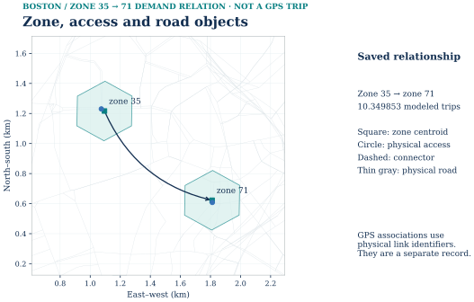

Separate objects, explicit relationships. Model access connectors are not physical roads. Shared link references do not imply a shared observed trip. The geographic panel is transformed from source EPSG:4326 to metric EPSG:32619 for display. Its straight dotted arrow shows a zonal OD relation, not an assigned road route; the inset shows the true projected 24.97 m node-to-node access geometry. Parent 1003 is a logical super_zone relation, not a clipped polygon invented for this figure.
| Record and authority | Actual key/value | What the join does |
|---|---|---|
GMNS core zone.csv |
zone_id=35, name=h3r9:892a306602bffff, super_zone=1003; parent name h3r7:872a30660ffffff |
Retains the actual fine H3 boundary and its r7 hierarchy key. |
GMNS Plus profile node.csv |
centroid node_id=35; physical access node_id=14285 |
Separate centroid and physical road node. |
MCL id_crosswalk.csv |
origin 35: physical_access_node_id=14285, source 4285; destination 71: exported access 11492, source 1492 |
Maps H3 and exported IDs without merging zones. |
GMNS Plus profile / MCL semantics link.csv |
outbound access link_id=1020334, 35 → 14285; physical outgoing link_id=16918, 14285 → 15112 |
The connector is nonphysical and mcl_gps_match_allowed=false; the road is physical and directed. |
GMNS Plus profile demand_S1.csv |
35 → 71, volume=10.349852758647414; crosswalked physical access OD 4285 → 1492 |
Modeled fixed-panel vehicle trips, aggregated from eligible ledger rows. This row does not say which physical road the OD used. |
| Separate MCL evidence/result branch | route-60 saved path occurrence 1 → link_id=15893 → S1 result 13.167906406832085 |
A shared physical-link key supports a separate lookup; it is not the above OD's trip or an observed road count. |
The active 177 H3 r9 zones are mapped reversibly to integers 1–177. Nine r7 parents are aggregation metadata, not extra demand origins. Each fine zone has its own centroid even where multiple zones share one of 139 physical access nodes. Physical node IDs are 10000 + original node ID; physical link IDs remain original link IDs. The 354 zone-access arcs are nonphysical and cannot be GPS matched. node.zone_id no longer ambiguously carries source TAZ values. All original source TAZs and connectors remain intact in the source_inputs/source_gmns_plus_21_boston/ asset member (source identity), but are inactive in this H3 graph.
The full r9 H3 ID, exported integer, source physical-node ID and GMNS link ID remain different namespaces. The published figure-source record supplies exact public CSV hashes and selected IDs; the renderer reads those same files. The minimal route-60 display sample retains only 12 already approved derived positions, 26 ordered path rows and one quality row, with source hashes and no vehicle-identity field; the full saved GPS tables are not required in the upload set.

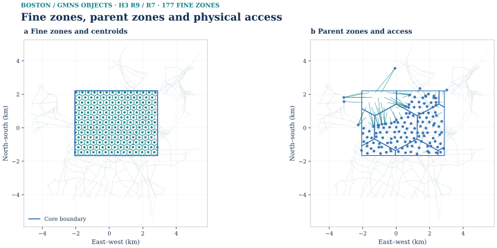

Source records
- examples/boston/gmns_exchange_r1/data/link.csv
- examples/boston/gmns_exchange_r1/data/zone.csv
- examples/boston/gmns_exchange_r1/data/node.csv
- examples/boston/gmns_exchange_r1/data/id_crosswalk.csv
- Additional saved input: core.geojson; its public acquisition route remains subject to the reproduction audit.
Central Boston contains 5,091 directed physical GMNS links, 177 clipped H3 r9 zones, nine r7 parent zones, the core boundary and a 2.5 km analysis buffer. Orange marks one continuous model corridor with 23 ordered member links. MassGIS parcel outlines supply context and are not building footprints; model access connectors are omitted. Roads: GMNS Plus 21_Boston (Apache-2.0), commit 116447ab641cca1ed34797d019c8e704063393c3; parcels: MassGIS (Bureau of Geographic Information), Commonwealth of Massachusetts EOTSS; zones and boundaries: Mobility Computation Lab.
This is a data-interface view of the accepted Boston result, not a new model run. Open zone.csv, node.csv, link.csv, S1 zonal demand, S2 zonal demand, ID crosswalk or the machine manifest directly. The selected GMNS Plus reader consumed node/link/demand for both scenarios at structural Level 2 with zero errors and zero warnings; its Level 2 path does not parse zone.csv, which our separate pinned-schema runner checks. These results do not establish ODME, routed-centroid costs, empirical calibration or a teacher/competition approval.
The link.capacity core field is source PCE/hour/lane; mcl_solver_capacity_effective is the accepted two-hour physical solver value. The exporter preserves the entire frozen S1/S2 link row in explicitly prefixed MCL columns so the physical solver input is exactly reconstructible. The original dir_flag describes WKT orientation; directed=true describes travel. Blank connector speed/capacity/length is intentional: a structural reader can parse this graph, but generic routing through its centroids has not been certified. The supported solver adapter collapses zonal OD onto the accepted physical access-node injection without rerunning assignment.
The per-scenario demand CSVs have exactly o_zone_id,d_zone_id,volume, in vehicle trips for the fixed midday panel. The saved crosswalk selects S1 mu=0.25 and S2's accepted FW boundary variant mu=1.0 before aggregating modes and departures. selected_demand_ledger.csv retains the included/excluded row semantics. The full regional 177×177 purpose/time OD is not replaced by these 26-row panel tables; it remains in derived/regional_od_h3.csv in the separate immutable BOSTON_BEHAVIOR_FEEDBACK_PUBLIC_DATA_EN.zip release asset.
The GPS path relation, planned GTFS shape-to-link relation, stop-to-physical-node access candidates, ordered corridor membership, and saved road result are MCL evidence/result extensions, not universal GMNS schema tables. The 2,906 stop-route rows without a known access node stay blank, not zero. GPS observations were MBTA V3 JSON positions, not GTFS-Realtime protobuf. Native GTFS feed/route/stop IDs remain distinct from H3 and road IDs. No incomplete GMNS location rows have been fabricated.
See Fine zones, parent zones and physical access
See Fine zones, parent zones and physical access
Transit, pedestrian access and GPS coverage
For 2026-09-22, the local GTFS slice contains 12,901 trips on 112 routes, 3,553 referenced stops (1,391 in the analysis area), and 286,151 stop-time records. Foreign-key and time checks pass. Stop access is a modelled nearest-road-node relation. One planned shape was geometrically conflated to roads; a planned shape is not an observed vehicle path. Planned shape conflation remains separate from observed vehicle paths. The stop-access overlay uses deduplicated stop IDs and modeled nearest-physical-node access candidates; its straight connectors are not field-verified pedestrian routes.
The original local build retained 2,091 cleaned bus-position points in 235 capture-window-censored segments. Thirty entered matching: 28 returned continuous paths and two did not. The other 205 were not selected. The later joint spatial/time/path checks qualified nine of the returned segments; all nine native-fallback paths were rejected for trusted-observation use. Returning a connected path is not an accuracy certificate. The coverage figure includes all 28 returned path segments, comprising 581 path records and 431 distinct physical links. It does not overlay the separate 12-point sample and must not be read as 28 accepted observation trajectories.
The earlier path-time scale was corrected to approximately 2.185624 after aligning first/last partial-link windows. It remains a development diagnostic: the previously inspected holdout is not new independent validation, and the observed midday period does not align with the separate AM engineering scenario. It is not applied as an automobile cost multiplier.
See One GPS segment and its GMNS association
The fixed route-60 sample contains 12 saved source positions and 26 ordered path occurrences for the quality-eligible segment mbtav:4624d3319dcfdec1:s01, with both capture-window ends censored. Source positions, algorithm-derived projections and the saved matched path remain different objects. The original comparison used EPSG:32619 and paired 140 m point-1 windows; the consolidated figure retains the source/projection map, lateral-error series and separate S1 link-result lookup. Matching is not rerun and source positions are not moved. The segment was selected by a stable quality-eligible rule, not by its largest offset. One successful case does not estimate independent matching accuracy.
| Record type | Actual key | Reference, status and unit |
|---|---|---|
Source position in sample gps_point_progress.csv |
segment mbtav:4624d3319dcfdec1:s01, point_seq=1, 2026-09-21T12:48:42-04:00 |
Saved original coordinate and algorithm-derived projection; lateral offset 1.128122562325221 m. |
Saved matching in sample gps_path_links.csv |
path_order=1, path_occurrence=1, link_id=15893, direction AB; next links 15882, 16110 |
Ordered algorithm-derived physical-link path. Point 1 is associated with occurrence 1; intermediate occurrences with zero projected points are inferred traversal, not new observations. |
Physical road in link.csv |
link_id=15893, exported physical nodes 14999 → 13587 |
Directed, GPS-match-allowed network geometry and attributes. This is not a nonphysical centroid connector. |
Saved model result in assignment_result_by_scenario.csv |
link_id=15893, s1_volume=13.167906406832085, s1_travel_time=0.5249053659293993 |
S1 aggregate modeled panel vehicle trips and link minutes; delta_status=MODEL_INTERNAL_PANEL_RESPONSE_NOT_OBSERVED_CAUSAL_EFFECT. These are not GPS-derived counts. |
Source observations → algorithm-derived matching → network attributes → separately modeled assignment results. Shared network reference—not the same observed trip. This route-60 spatial example is distinct from the route-749, stop-1788-to-5093 numerical service-feedback event. The former demonstrates reference/link lookup; the latter demonstrates a saved calculation dependency. Neither makes GMNS itself a matcher or proves better prediction. MBTA V3 JSON-derived positions retain MBTA/MassDOT attribution; no raw vehicle feed or exact vehicle identity is redistributed by these figures.

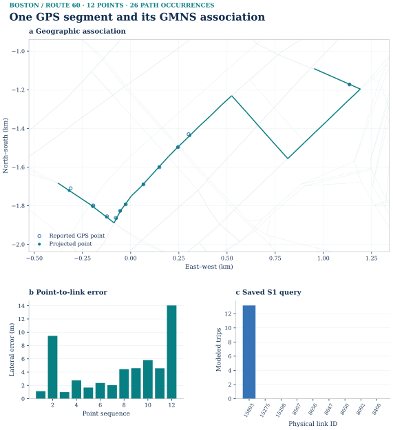

Source records
- examples/boston/gmns_exchange_r1/figure_sample/gps_point_progress.csv
- examples/boston/gmns_exchange_r1/figure_sample/gps_path_links.csv
- examples/boston/gmns_exchange_r1/figure_sample/gps_segment_quality.csv
- examples/boston/gmns_exchange_r1/data/link.csv
- examples/boston/gmns_exchange_r1/data/assignment_result_by_scenario.csv

The segment is the first eligible one by stable identifier among those with at least six published derived points; the rule does not select a large effect. Lateral offsets span 0.98–14.04 m. This representative view is neither passenger travel nor an overall or lane-level accuracy certificate, and it is not necessarily the observation used in the feedback trace. Position source: MassDOT / MBTA V3; derived projection: Mobility Computation Lab; roads: GMNS Plus 21_Boston (Apache-2.0); parcel context: MassGIS (Bureau of Geographic Information), Commonwealth of Massachusetts EOTSS.

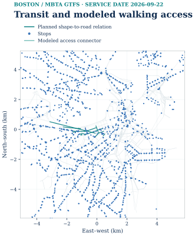


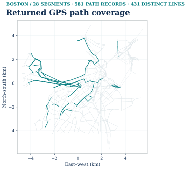

02 / Population, households and travel demand
Household allocation precedes the four travel-demand stages. Population, households, activity proxies and modeled person trips have different units and are kept separate.
Source record · Snapshot 6ce18b8.
Related source records: boston-population-households.md.
This is an upstream preparation step for the saved Boston four-stage example, not a fifth model stage. Its source statistics, model zones, transferred trip rates and activity-attraction proxy are distinct objects. The figures below are area-weighted estimates for the fixed union of 177 clipped H3 r9 zones—not the City of Boston, the road buffer, or all three source counties. No household microdata, synthetic persons or observed external-trip matrix was produced.
Editable SVG · Displayed geometry cutout · Figure provenance · Rendering source. On narrow screens, scroll the figure horizontally. The figure selects the lexicographically first Suffolk GEOID in the released source-statistics table, not the largest allocation or effect. Its geometry is from the recorded Census Reporter TIGER2024 mirror file and the released clipped-zone WKT. Its numbers are one saved source-to-zone contribution, not that H3 zone's total. The cutout is a display subset, not a substitute for all raw county geometry.

| Role | Recorded input and version | Important distinction |
|---|---|---|
| Population and households | U.S. Census Bureau ACS 2024 five-year detailed tables, reference period 2020–2024, accessed through Census Reporter acs2024_5yr for block groups in Massachusetts Suffolk 025, Middlesex 017, Norfolk 021 (state 25) |
B01003 total persons and B11001 total households; households are not family-household subtotal or dwelling units. |
| Statistical boundaries | Census Reporter tiger2024 block-group GeoJSON, joined by source_geoid |
Not an H3 population raster or an original direct TIGER shapefile download. |
| Target geography | 177 clipped H3 r9 zones, nine-parent hierarchy, and reversible GMNS IDs/access | The core is the union of the stored mcl_clipped_geometry_wkt values. Source block-group IDs and H3 IDs remain separate. |
| Production parameters | CTPS TDM23.2.0 Structures and Performance, March 2025, Table 74, printed p. 148, hh_mean |
Transferred regional effective mean rates, not local calibration or the full TDM23 package. |
| Attraction weights | MassGIS Property Tax Parcels, separately recorded assessment slice | Nonresidential/mixed building-area proxy, not measured employment and not a household disaggregation weight. The earlier residential-area/50,000-trip scenario is separate. |
The recorded code transforms source and target polygons to EPSG:32619 before taking areas. For source block group g and clipped H3 zone i:
w_gi = area(G_g ∩ H_i_clipped) / area(G_g); N_i = Σ_g N_g w_gi; H_i = Σ_g H_g w_gi.
The denominator is the full source polygon, not its in-core portion. This is uniform-within-source-area allocation; it is not address-, building-, land-only- or population-density-weighted. The remainder outside the core stays in the spatial ledger. The ledger's external_person_trips is blank and external_trip_status is UNKNOWN_NOT_ZERO_NO_REGIONAL_OD_INPUT: external travel is unknown, not zero. A no-data zone must not be interpreted as a known zero; all 177 saved zones happen to have source coverage.
| Saved result | Quantity and unit | Open file |
|---|---|---|
| Source block groups intersecting the core | 174 block groups | ACS source statistics |
| Source-to-zone contributions | 724 overlap rows | Area-share crosswalk |
| Area-weighted core population | 171,049.52015979076 persons | H3 attributes |
| Area-weighted core households | 79,537.49255074753 households | H3 attributes |
| Six-purpose modeled daily productions | 816,054.6735706696 person trips | Generation rows |
Related source records: Census Reporter acs2024_5yr.
The direct generation input is households, not the population total: P_i,p = H_i × r_p in modeled person trips per average weekday. The saved effective rates per household are HBW 1.90, HBSC 0.59, HBSR 2.19, HBPB 2.38, NHBW 0.51 and NHBNW 2.69. Their displayed six-rate sum is 10.26, while CTPS Table 74's separate all_trips hh_mean row displays 10.25. Both are reported as printed; the saved project used the six displayed purpose values. The population column is retained as a zonal attribute, not multiplied by these rates. No household income, worker count or vehicle-sufficiency distribution is inferred from these two totals.
The saved source table retains ACS margin-of-error fields. The H3 sums do not have a validated propagated MOE; do not read confidence bands into this allocation. Attractions were balanced separately by purpose from the MassGIS nonresidential/mixed building-area prior. No LODES WAC/RAC/OD values were acquired for this accepted branch.
In the released crosswalk, source 15000US250250101031 has 957 persons and 232 households. Its contribution to target h3r9:892a30644a3ffff has source_area_share = 0.30570178112615354, yielding allocated_population = 292.55660453772896 and allocated_households = 70.92281322126762. Other source rows may also contribute to that target, and the block group's other overlap rows and outside-core remainder remain separately accounted for.
The original build code used source IDs census_reporter_acs2024_5yr_bg_mirror, ctps_tdm23_2_0_structures_performance_202503 and massgis_property_tax_parcels_feature_service_20260917; the release-normalized rows use acs2024_5yr_bg_census_reporter_mirror, ctps_tdm23_2_0_report and massgis_property_assessment_20260917. This is an explicit alias map, not a rewrite of frozen source IDs.

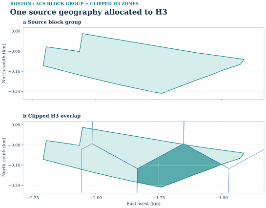

| Prepared input | Use in this saved case | Source/reproduction |
|---|---|---|
| H3 households | P_i,p = H_i × r_p with transferred CTPS TDM23.2.0 Table 74 effective mean rates |
ACS fields, crosswalk and read-only verification |
| H3 population | Retained zonal demographic attribute; not multiplied by household rates | Released H3 table |
| MassGIS nonresidential/mixed area | Separate purpose-attraction proxy, not measured jobs or household allocation | Recorded parcel source |


Source records
- examples/boston/population_r1/data/population_or_household_by_zone.csv
- docs/assets/boston/four_step_results_r1/data/hbw_midday_matrix.csv
- examples/boston/gmns_exchange_r1/data/zone.csv
- Additional saved input: zone_activity_r9.csv; its public acquisition route remains subject to the reproduction audit.
- docs/assets/boston/four_step_results_r1/data/zone_order.csv
- examples/boston/gmns_exchange_r1/data/link.csv
See One source geography allocated to H3

Trip generation: six household-rate purposes
Input. Area-allocated ACS household estimates; CTPS TDM23.2.0 effective regional mean rates by purpose; MassGIS nonresidential/mixed assessment activity for attraction weights.
Calculation. For each purpose, multiply each zone's estimated households by the corresponding transferred effective mean rate. The saved area allocation yields about 79,537.49 households. The six rounded report rates sum to 10.26, yielding approximately 816,054.67 person trips per modeled workday. The rates are regional summary transfers, not the complete segmented TDM23 generation model. The source purpose codes mean home-based work (HBW), home-based school (HBSC), home-based social/recreation (HBSR), home-based personal business (HBPB), non-home-based work (NHBW) and non-home-based non-work (NHBNW). In particular, HBSR is not a shopping category.
Output. Zonal, purpose-specific productions and attraction margins in trip_generation_by_purpose.csv. The chart sums the saved production column across zones for each original purpose code; it does not rerun the model.
Related source records: Saved generation chart and table.

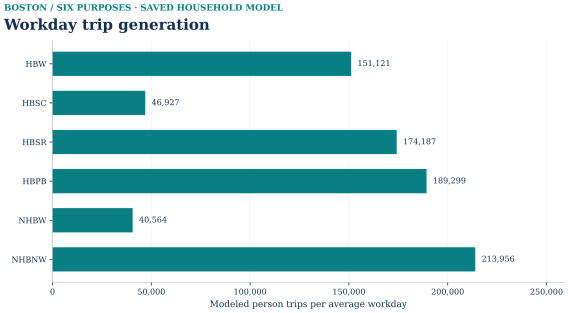

Download the six plotted totals · Chart provenance
The residential assessment map is an activity input from the earlier 50,000-person-trip prior. It is not the current generation result or an observed population/trip map. That earlier scenario remains available as a separate baseline.

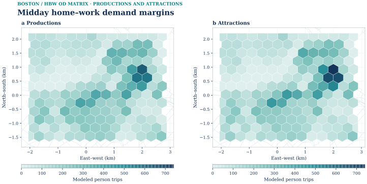

Trip distribution: balanced purpose/time OD
Input. Purpose-specific productions, activity-based attraction weights and the existing zone-to-zone free-flow impedance.
Calculation. Gravity/IPF balances the PA matrix. Registered purpose/time factors convert PA into directed OD, including reverse-direction support. The retained friction factor is exp(-0.08 × time_in_minutes); the coefficient remains an engineering assumption. The core is treated as a bounded scenario: outside travel has not been estimated or loaded.
Output. The full accepted data asset contains derived/regional_od_h3.csv. The chart extracts its HBW midday field only, retaining all 177 origin and destination IDs in stable order. Exported cells sum to 22,807.216914 person trips.
Related source records: Distribution evidence.

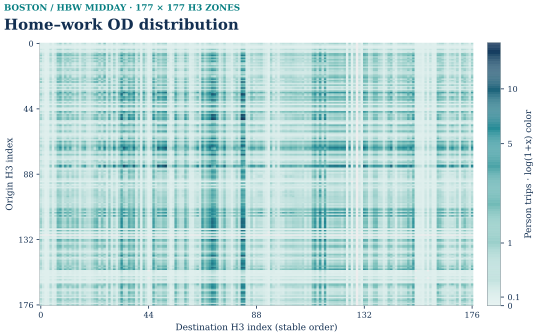

Download the plotted matrix · Index-to-H3 table
Color uses log(1+x) to expose the spread while the colorbar is labeled in original person-trip units. Blank cells have no exported record; they are not silently treated as observed zeros. This is modeled demand, not a GPS-derived passenger OD or a map of traveled paths.
Selection into later stages. validation_panel.csv records the fixed 36 HBW OD pairs. regional_od_panel_sample.csv links those pairs to the regional demand. Only this selected panel, with its declared departure weights and exclusions, proceeds to the feedback calculation.
03 / Semantic service feedback and panel road assignment
Current review: the prepared-input assignment stages of S1 and S2 have tested commands and independent numerical verification. These recipes recover the physical assignment inputs from the pinned public exchange and use the public mcl_assignment Frank–Wolfe implementation. They do not rerun upstream service-feedback or four-stage demand preparation, and do not invoke the historical tap_frank_wolfe implementation.
Source record · Snapshot 6ce18b8.
Related source records: Retained walkthrough · 04 / Case study — Boston · Original long README · 04 / Case study — Boston · boston-behavior-feedback.md#step-1-trip-generation · boston-behavior-feedback.md#step-2-trip-distribution · boston-behavior-feedback.md#step-3-mode-choice · boston-behavior-feedback.md#step-4-traffic-assignment.
The real-city network has 2,852 physical nodes, 5,091 directed roads, 177 H3 r9 zones and nine r7 parents. Zone access, transit, observations and results retain their source IDs and link to this common network. Model access connections are not automatically verified physical paths.
| Scope | What it contains | What it does not mean |
|---|---|---|
| Regional generation | Six transferred purpose totals, approximately 816,054.67 person trips per modeled workday | A measured trip total or the amount assigned in this example |
| Regional distribution | Saved purpose/time-specific PA and directed OD; the illustrated HBW midday total is 22,807.22 person trips | That every trip is included in the downstream panel |
| Fixed feedback panel | 36 HBW OD pairs and three departure samples; 78 eligible OD–time cases | A random population sample or a whole-region assignment |
| Road assignment | S1/S2 private and occupied ride-service inputs, approximately 202 vehicle trips each | Regional background traffic or complete allocation of all modes |
Related source records: 03 Mode choice · Run the saved example.
Thirty incomplete panel cases retain 78.079907 person trips in the exclusion ledger. The panel's three departure samples use declared engineering weights, not an observed continuous departure profile.
Input. The same panel person-demand weights; scheduled/adjusted itineraries and costs; the registered regional base shares, utility-change coefficients and nested response definition.
Calculation. S1 copies regional baseline shares. S2 uses the actual OD-specific service-cost change in a nested pivot response. The release includes multiple declared nest-scale sensitivity branches; the saved FW comparison uses μ_transit = 1. This does not estimate an absolute-cost S1 baseline separately for each OD.
Output. od_multimodal_skims.csv records journey costs and availability; od_mode_probabilities.csv records probabilities. The example chart includes all nine source leaves and plots percentage-point changes, not relative percentages.

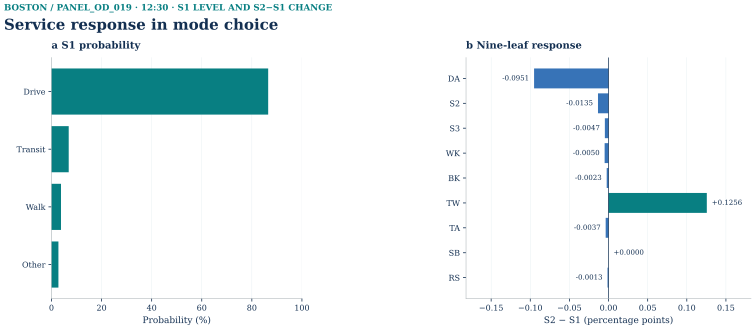

Download the plotted S1/S2 probabilities
For panel_od_019 at 12:30, walk-access transit changes from 4.0990% to 4.2246%, an increase of 0.1256 percentage points. Unknown alternatives remain explicit. Auto-access transit legs are not assigned; ride service represents occupied movements, with empty repositioning unknown. A zero school-bus response in this panel is a saved model value, not a statement about service availability across Boston.
Input. Eligible panel person trips are converted to vehicles under the registered occupancy/loading rules. Both scenarios use the same directed network, effective-capacity interpretation and static Frank–Wolfe implementation.
Calculation. The existing static solver distributes private and occupied ride-service demand. This Boston panel does not run the project's separate space–time CG engine, and it does not allocate every mode's passengers to their full network.
| Saved panel result | S1 · planned service | S2 · exploratory adjustment |
|---|---|---|
| Vehicle trips | 202.078384 | 202.070733 |
| Road-node demand pairs | 26 | 26 |
| Beckmann objective | 700.850087 | 700.814799 |

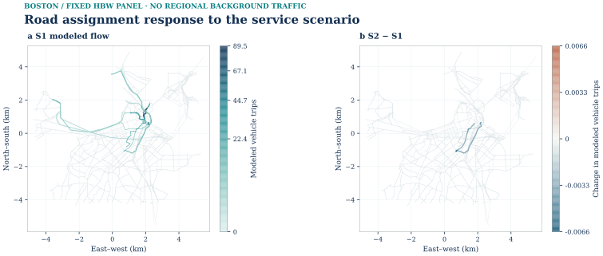

Related source records: Central Boston network map with teal directed links scaled to S1 modeled vehicle trips and a fixed 0–89.5 legend..

See Road assignment response to the service scenario
Related source records: Central Boston network map with 78 blue directed links for small negative S2 minus S1 modeled flow differences and a symmetric signed legend..

The paired maps use the same saved S1/S2 values and directed physical-link identities. There is no regional background traffic. The exact signed change and link count are given below; these small simulated differences do not establish measured congestion relief or empirical policy effects. Map sources and units.
Saved-output checks covered costs, aggregate node balance and a shortest-path gap at the saved flow. They are computational checks, not a separate full per-OD path decomposition or validation against traffic counts.
Saved S1 planned-service road flow appears on 319 nonzero directed links, with a maximum of 89.481820 modeled vehicle trips. The earlier map used a 2.7-screen-pixel reciprocal-direction offset; the consolidated flow figure is redrawn from the same link values. This fixed home-based-work panel has no regional background traffic; values are modeled panel trips, not observed road counts. Roads: GMNS Plus 21_Boston (Apache-2.0), commit 116447ab641cca1ed34797d019c8e704063393c3; saved assignment: Mobility Computation Lab.
Saved S2 exploratory GPS-overlay flow minus saved S1 planned-service flow uses identical directed physical links and the same viewport. Seventy-eight links decrease and none increase beyond 1e-10; the largest absolute difference is about 0.006602639857 modeled vehicle trips. The signed legend is symmetric about zero. This is a small fixed-panel sensitivity without regional background traffic, not congestion relief or a citywide causal effect. Roads: GMNS Plus 21_Boston (Apache-2.0), commit 116447ab641cca1ed34797d019c8e704063393c3; saved assignments: Mobility Computation Lab. See the current feedback data card for the precise panel and scenario scope.
See Service response in mode choice
See Frank–Wolfe across selected-demand scales
See Service response in mode choice
Source record · Snapshot 6ce18b8.
A source-keyed route-749 dependency trace
The GPS projection map shows one selected quality-qualified segment aligned to road reference lines. That illustration is not the same segment as the numeric trace below. It shows spatial linkage; this trace shows the subsequent model use.
Related source records: #src-docs-datasets-boston-gmns-exchange-document-from-gps-coordinates-to-gmns-linked-evidence · Scope and assumptions · boston-gmns-exchange.md#from-gps-coordinates-to-gmns-linked-evidence.
Raw positions → road/service identity → observed interval estimate
↓
exploratory interval adjustment
↓
GTFS itinerary/time/cost → 03 mode response → vehicle conversion
↓
04 same-network FW → road flow
Follow the full, source-keyed trace · Inspect its source row
A road's aggregate response sums multiple OD contributions; it is not solely caused by this one illustrated trace. GPS is not used here to estimate the regional household trip total, gravity β, all passenger OD or automobile BPR parameters. No independent AM validation is included.
Observation: gps-stop-pair:mbtav:cccdb505033abedc:s01:5-10
MBTA trip: 78591067
Route: 749
Direction: 1
Stop pair: 1788 -> 5093
The derived elapsed time is 86 seconds, compared with 180 seconds in the corresponding planned interval. These are sample-derived interval estimates; a vehicle-position snapshot at a stop is not an exact door-open or door-close event.
The overlay parameter gps_midday_stop_pair_09 stores an approximate ratio of 0.477778. It is disabled by default and applies only within its declared exploratory scope. Each of the 13 registered adjustments has one supporting event; they are not 13 independently validated population parameters.
The road network, panel objects and person weights, base transit feed, baseline mode shares, non-overlay inputs, and assignment solver are held fixed. The scenario changes the service overlay and recomputes the dependent itineraries, travel costs, mode responses, and vehicle demand.
panel_od_019, 12:30:00 |
S1 | S2 |
|---|---|---|
| Transit journey time | 29.052381 min | 27.485714 min |
| Selected-itinerary adult CharlieCard fare | USD 1.70 | USD 1.70 |
Walk-access-transit probability, mu_transit=1 branch |
0.040990 | 0.042246 |
| Walk-access-transit person trips | 0.111465 | 0.114880 |
| Private/occupied ride-service vehicle trips | 2.164631 | 2.161796 |
Each available transit alternative contains a permitted ride. Its leg records expose access, waiting, riding, transfers, and egress rather than treating a pure walking route as transit.
The zero fare difference here follows from the selected paths' equal fares. It is not a rule that all service changes have zero monetary effect. The implementation retains the actual path-derived cost difference and its declared price-year conversion when applicable.
On link 16105, aggregate panel flow changes from 19.280398 to 19.273796 vehicle trips. This road-link difference aggregates all contributing panel OD cases; it must not be attributed entirely to the single OD highlighted above.
Srestore rebuilds the affected service connections without the overlay and recomputes the downstream journey costs, probabilities, and vehicle demand. Its comparable outcomes return to S1 within the recorded numerical tolerances.
This restoration check establishes that the named service input is connected to the reported response. It does not establish that a new day or an unobserved population will behave as predicted.
The current service-feedback example instead uses 13 separately registered station-interval events as default-off exploratory inputs. Those interval-event counts are not the same objects as the nine quality-qualified road-matching segments. The gallery's GPS illustration and the numeric feedback trace preserve their distinct source identities.
Scope and unavailable movements
This is a source-backed, bounded four-step technical example with exploratory observation feedback. Household rates are transferred regional effective means; attraction, impedance, external travel and discrete departures retain explicit assumptions. Baseline shares are common regional shares, not a local absolute-cost choice model. The service overlay is retrospective midday evidence, not an independently validated AM parameter set.
Related source records: behavior-feedback pilot.
The original 50,000-person-trip engineering scenarios, MassGIS activity prior, current regional-rate output and fixed feedback panel are distinct versions and scopes. Their charts and totals must not be silently mixed. Earlier layers and retained maps.
All source registrations and data terms remain in force. A code license does not replace network, ACS, MassGIS, MBTA or CTPS source terms. Private reviews, correspondence and unnecessary report caches are not required to use this public component.
The baseline uses common regional shares. The reported assignment follows the mu_transit=1 sensitivity branch; unavailable official nest scales are not fabricated. Attraction weights, impedance parameters, external traffic, and the panel's discrete departure weights retain their documented limitations.
Only private and occupied ride-service vehicle movements represented by this panel are loaded onto roads. Empty ride-service repositioning is unknown and excluded, not assumed to be zero; transit-auto access legs are not assigned. The saved capacity interpretation remains an explicit engineering assumption where the original Boston generator's basis has not been independently established.
The observation overlay is retrospective and uses limited midday evidence. It does not estimate all passenger OD, calibrate automobile congestion parameters, or establish independent morning-peak performance. The restoration scenario verifies a computational dependency; it is not an empirical validation experiment.
04 / Distinct static BPR–Beckmann instances
The conditional absolute-attribute sensitivity, its fixed method-control panel and the expanded FW tiers use different demand cohorts. Each result retains its own network/demand identity and acceptance gate.
Source record · Snapshot 6ce18b8.
The standard-library evaluator and exact reduced specification were used previously on a frozen 108-object HBW midday panel. Four alternatives (DA, S2, S3, TW) are conditional on a sufficient-vehicle household; 87 objects had known four-mode inputs and 21 remained unknown. Only 78 common objects were loaded on 26 endpoint OD pairs. The archived complete input skims are not reproduced in this compact public folder, so the evaluator is a published implementation/specification, not a promise that the full old panel can be rebuilt from this folder alone.
od_baseline_probabilities.csv and scenario_comparison.csv are previously saved derived project outputs; PARAMETER_REGISTER.csv and VARIABLE_MAPPING.csv document the reduced transfer specification. demand_abs_obs_exploratory.csv and fw_abs_obs_exploratory_solution.csv are the saved static FW input/output for the exploratory service scenario. Its 203.6573680559407 modeled vehicle trips and Beckmann F=707.043586277782 are distinct from ABS_PLANNED's 203.6604786350987 and F=707.0579230712884. The older semantic S1 baseline (about 202.078384) is a third, separately labelled line.
The reduced sensitivity does not reproduce official complete TDM23 utility/availability, estimate local choice parameters, validate AM forecasts or infer regional traffic. The report-derived parameters, price-year conversion, zero terminal/parking/toll sensitivity and missing alternatives are qualified in the model specification. No source PDF, raw GTFS, private skims or unsent correspondence is distributed here.
ABS_PLANNED: 26-OD, 130-path method control
Source record · Snapshot 6ce18b8.
Related source records: #src-docs-cases-boston-assignment-document-comparison-board · boston-assignment.md#comparison-board.
The frozen ABS_PLANNED conditional panel is one 5,091-physical-link, 26-endpoint-OD, 203.6604786350987-modelled-vehicle-trip Beckmann/BPR instance with a 130-path finite pool. FW, the uncompressed SLSQP path reference, and the two accepted native Diagnostic L3 representations use those identical link/demand/pool bytes. This algorithm comparison is not the earlier semantic S1/S2 service-feedback comparison (about 202.078384/202.070733 vehicle trips) and is not measured congestion.
Related source records: Saved files.
What this comparison checks. Native Diagnostic L3 solves a reduced path representation and reconstructs flow on the original physical links. The saved Frank–Wolfe result on the same ABS_PLANNED 26-OD, 130-path instance is a numerical reference for that reconstruction. The maps show reconstructed flow and reconstruction error; they do not establish an algorithm ranking or a speedup. This bounded case does not establish performance on the full city demand.


Source records
The five-panel comparison is redrawn from the common full-precision link table, retaining one FW baseline, two native absolute maps and two signed differences. The earlier individual exports remain source records: FW original · rank26 original · rank52 original · rank26 difference · rank52 difference.
| Method / selected run | Path representation | Original Beckmann F (vehicle-minutes) | Max OD residual (trips) | Signed full-network gap | Full-network relative gap |
|---|---|---|---|---|---|
| FW · ABS_PLANNED | network assignment | 707.0579230712884 | no public path decomposition | approximately zero in frozen audit | approximately zero |
| Full path · SLSQP | 130 nonnegative paths | 707.0579230712882 | 0 | 7.958078640513122e-13 | 1.1254939019453976e-15 |
| Native L3 · rank 26 · outer 02 | 52 reduced path coordinates + 5,091 explicit links = 5,143 native variables | 707.0578811137339 | 8.255328278750085e-7 | −4.19575542309758e-5 | −5.933966773022305e-8 |
| Native L3 · rank 52 · outer 02 | 78 reduced path coordinates + 5,091 explicit links = 5,169 native variables | 707.0578811562873 | 8.254705861077127e-7 | −4.191500090655609e-5 | −5.927948547394401e-8 |
Related source records: FW · ABS_OBS_EXPLORATORY.
These native points pass the recorded numerical tolerances but are not exact feasible equilibria: the small negative signed gaps reflect accepted OD deficits, not rounding or a superior solution below the feasible optimum. The native initial path flow reuses the full-path reference; this is a reference-informed fixed-instance transfer, not a cold-start or general speedup test. IPOPT peak memory was not recorded. No independent empirical validation or strict cross-city performance comparison was made.
Complementary saved-result views: finite-path distribution and physical-network flow/support; rank-26 L3 distribution and physical-network reconstruction/difference. The latter difference uses the same-instance finite-path vector as reference. Figure source hashes. The consolidated rank-26 residual diagnostic compares native flow with the finite-path reference, while the five-panel absolute/difference comparison uses FW as its baseline. The two reference identities are not interchangeable.


The three absolute maps share one EPSG:4326 source geometry, local map projection, extent, background, PowerNorm colour scale and line-width rule. Modelled vehicle trips are the unit. Directed links are drawn with a 3 m right-of-travel display offset so reciprocal arcs can be distinguished; source WKT and all numerical joins remain unaltered. Gray shows all 5,091 physical road links, including zero-flow links. The legacy maps used a colored absolute-flow cutoff of 1e-6 trips. The consolidated display uses |flow| > 1e-12; every physical link remains in the full-precision table and background geometry. A common scale means the three maps can legitimately look visually indistinguishable.
Both maps use the same zero-centred symmetric scale. The maximum absolute link differences are 5.888579437396402e-6 (rank 26) and 5.88828736169944e-6 (rank 52) modelled vehicle trips. Full-path versus FW differs by at most 1.4210854715202004e-14. The difference figures show micro-scale numerical variation; they are not service changes, observed traffic, or a congestion benefit. Values with |Δ| ≤ 1e-12 are omitted from the coloured overlay but remain in the full-precision table.
All 5,091 linked rows with original WKT and full-precision FW/full/rank values · Figure member hashes, fields, extents, scale and credits · No-solve renderer
GMNS physical link_id and the documented exchange crosswalk let method outputs attach to the same road geometry. For example, the plotting table's physical link 4624 has from_node_id=192, to_node_id=193, source link_id=4624 and a saved FW flow of zero; that source key remains distinct from any exported numeric link ID. The old route-60 GMNS/GPS figure and its S1 value are a different evidence object, not a measurement of these ABS_PLANNED outputs.

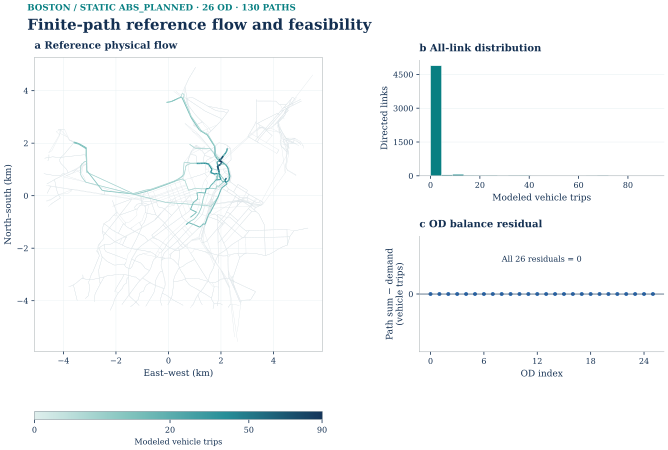

Source records
- examples/boston/assignment_methods_r1/reference/link_flow.csv
- examples/boston/assignment_methods_r1/reference/full_path_flow.csv
- examples/boston/assignment_methods_r1/inputs_snapshot/path_pool/od_index.csv
- examples/boston/assignment_methods_r1/inputs_snapshot/link.csv
- docs/assets/boston/assignment_methods_r1/boston_abs_planned_assignment_links.csv
See Finite-path reference flow and feasibility
See Native L3 residual against finite-path reference

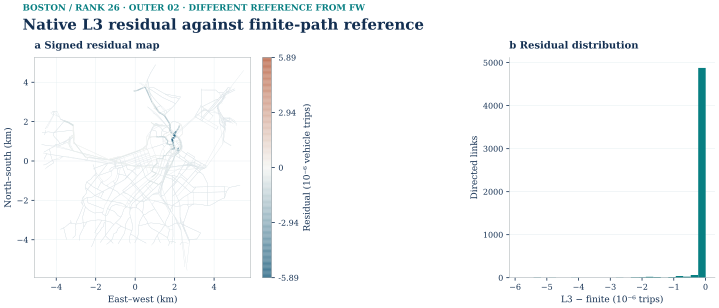
See FW and native L3 reconstruction
Expanded conditional FW: 500, 2,000 and all source-zone OD
Source record · Snapshot 6ce18b8.
Related source records: 500-tier map · 2,000-tier map · All-tier endpoint coverage · BOSTON_SCALE_RESULTS.md.


This page reports calculations on the accepted Central Boston 5,091 physical directed links. The existing 36-source-zone-pair / 26-physical-node-pair ABS_PLANNED case is retained as the Fixed-panel algorithm check: it had 203.6604786350987 modeled vehicle trips and 319 strictly positive physical links. The new scenario selects additional OD from saved HBW-midday person demand, computes new planned-service costs, applies a fixed conditional four-mode specification, and assigns the eligible resulting vehicles. It does not estimate citywide traffic or validate behavior with new observations.
The locked regional source has 30,790 positive interzonal and 171 positive intrazonal HBW-midday H3 OD, totaling 22,807.21691394174 modeled person trips. The all-eligible selection is interzonal only, with 22,633.46972887332 person trips (99.2382% of source person mass); the remainder is intrazonal. Selection uses a deterministic coverage-first ordering with parent-pair and distance-stratum support followed by demand rank. Its expansion factor is 1. The labels 500 and 2000 count selected source-zone OD, not final road OD.
| Selection | Source-zone OD | Source person mass | Fraction of full HBW midday | Distinct source-zone endpoints | Parent pairs | Mapped node OD before choice |
|---|---|---|---|---|---|---|
| 500 | 500 | 2,643.766735 | 11.5918% | 176 | 80 | 493 |
| 2000 | 2,000 | 8,415.295048 | 36.8975% | 176 | 80 | 1,944 |
| All interzonal | 30,790 | 22,633.469729 | 99.2382% | 176 | 80 | 19,182 |
The source-zone access crosswalk has 139 distinct physical endpoint nodes. Some zone OD collapse to the same physical access node and are accounted as not road-loaded. Eligibility from complete DA/S2/S3/TW attributes is assessed after selection. No person's unknown alternative is assigned a guessed mode or vehicle count.
New PLANNED, observation-overlay-off routing on 2026-09-21 at 12:30, 12:40 and 12:50 generated 3,000 OD-mode-time rows from the selected 500 source-zone OD. The three departure samples each represent one third of the saved midday person mass. This is an engineering sampling assumption; the assignment period is separately declared as two hours with effective-period PCE capacity. The routing stage took 1,924.046 s, including 24.150 s setup, across 176 origin chunks. The immutable skim output SHA-256 is 866e4c809d96b05b54c3cf6d89584fe2057bf02bd5e38dedf5c476fcb1b328a0.
The candidate retains the accepted semantic transit adapter. Eight reused OSM/service graph and four pure choice function definitions were compared by Python AST to their locked public sources and were identical; their unused historical fixed-panel entries were removed from the candidate modules. The fixed-panel probability adapter was separately regressed on all 348 saved supported planned probability rows (maximum absolute difference 1.11e−16). Neither check substitutes for the actual new 500-pair routing and assignment above.
The fixed REDUCED_TRANSFER_SENSITIVITY_HBW_AUTO_TW_SV_R1 choice model evaluated 2,413.603497 of the selected 2,643.766735 person trips and left 230.163238 person trips unknown because at least one required attribute or fare was unavailable. Of 1,500 OD-time objects, 1,353 had the four known alternatives. The selected source OD map through 139 physical access origins and 139 destinations before eligibility. Explicit DA/S2/S3 occupancy conversion produced 1,936.238475 vehicle trips/PCE in the declared period, aggregated into 453 physical-node OD over 130 physical origins, 131 physical destinations and 131 endpoint nodes in their union. Transit-walk person choices add no modeled road vehicle. The resulting vehicle quantity is a conditional engineering cohort sensitivity, not a population estimate.
The instance signature is bb1ac850c6ce0f530c2127f4b3a9dabb12e68319517929fce1e2be0a0eb98829. The same generic FW CLI used for the independent direct-vehicle fixture solved it in 31.060 s, with a cold minimum-free-flow path seed that already satisfied the declared gap gate (0 line-search iterations). The independent verifier found objective 7,922.083942188114 PCE-minutes, maximum OD residual 0, link reconstruction error 0 and signed full-network relative gap −4.590249237557149e−16. The tiny negative signed gap is floating-point evaluation roundoff, not a better-than-equilibrium flow. There are 1,653 strictly positive links (32.47% of physical links), including 1,650 above the disclosed map cutoff of 1e−6 PCE. The other physical links remain in the flow table and map background.
See Frank–Wolfe across selected-demand scales
See Physical endpoint coverage


The road-flow and mapped-endpoint figures use the complete physical-link table and explicit access mapping. The source-zone figure separately uses selected H3 person OD and the locked source zone centroids; source zones are not road nodes. Vector SVG versions and plotted source CSVs are beside the PNG files. Colors show modeled PCE or selected person mass on the clipped study network, not observed counts.
The 2,000 selection generated 12,000 planned-service cost rows. Its 500 overlapping OD were copied only after the preceding panel and skim hashes passed; the remaining OD were routed against the same source road, walk and service files. The original time-capped attempt completed 162 of 176 origin chunks, and the authorized continuation finished the remaining 14. The two routing-source wall times were 5,231.047 and 279.522 seconds. These are separate attempts, not a single uninterrupted wall measurement.
The all-interzonal selection generated 184,740 cost rows, reusing the verified 2,000 OD and calculating the other 28,790. A destination-independent scheduled-label scan was shared within each origin and departure; the original stop-state and terminal itinerary statements match by AST, and eight synthetic route cases returned identical full outputs. The all-tier skim took 776.937 source seconds. The faster calculation is not a speedup estimate because these stages have different OD and cache scopes.
| Fixed-demand tier | Selected person trips | Evaluated person trips | Unknown person trips | Loaded vehicle/PCE trips | Final node OD | Distinct physical endpoints | FW objective, PCE-min | Signed full gap | Positive links / 5,091 |
|---|---|---|---|---|---|---|---|---|---|
| 500 | 2,643.767 | 2,413.603 | 230.163 | 1,936.238 | 453 | 131 | 7,922.083942 | −4.59e−16 | 1,653 |
| 2,000 | 8,415.295 | 7,248.674 | 1,166.621 | 5,815.569 | 1,684 | 132 | 24,238.470872 | 5.60e−6 | 1,784 |
| All 30,790 interzonal | 22,633.470 | 20,231.449 | 2,402.021 | 16,259.122 | 17,522 | 133 | 73,552.277556 | 6.81e−6 | 2,147 |
Related source records: Full scale and resource details.
All three independent FW checks found zero per-OD demand residual and no negative raw flow. The 2,000 result has zero link reconstruction error; all-interzonal link error is 2.84e−14 PCE. The all-tier FW made one line-search step (step length 1) after its free-flow seed, then met the prospective 1e−5 full-gap gate. These results increase modeled OD and physical-link coverage on the same 5,091-link clipped network; they do not establish citywide traffic coverage. Source origins and destinations each number 176 at every tier, while eligible physical endpoints expand from 131 to 133 between the new tiers.
See Frank–Wolfe across selected-demand scales
See Selected source-zone demand margins
The consolidated 500 / 2,000 / all-interzonal road maps use one shared physical-flow color scale, in PCE per modeled period. All 5,091 physical links remain in every plotting table, including exact zeros. The saved legacy maps used a separate maximum and a colored-flow cutoff of 1e−6 PCE per tier; the consolidated renderer uses |flow| > 1e−12 for its colored overlay and retains zero-flow roads in the background. These display rules do not change any flow or acceptance result.


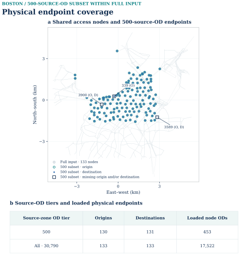

See Frank–Wolfe across selected-demand scales
Expanded path/L3 gates and the separate generic fixture
| Instance | FW | Finite full path | Native Diagnostic L3, 25% | Native Diagnostic L3, 50% |
|---|---|---|---|---|
| New 500-source-zone selection | Accepted, 453 loaded node OD | RESOURCE_LIMIT before solve |
RESOURCE_LIMIT before basis/solve |
RESOURCE_LIMIT before basis/solve |
| New 2,000-source-zone selection | Accepted, 1,684 loaded node OD | RESOURCE_LIMIT after valid K=5 pool, before solve |
RESOURCE_LIMIT before basis/solve |
RESOURCE_LIMIT before basis/solve |
| All 30,790 interzonal pairs | Accepted, 17,522 loaded node OD | RESOURCE_LIMIT at path-pool preparation gate |
RESOURCE_LIMIT at path-pool preparation gate |
RESOURCE_LIMIT at path-pool preparation gate |
| New two-OD generic fixture | Accepted | Accepted | Accepted at actual rank 1 | Not requested |
An accepted generic fixture demonstrates tool execution and numerical checking on changed inputs. It does not upgrade the expanded Boston native cells to accepted status.
The 500 instance has a new loopless K=5 path pool of 2,261 paths (453 OD, 1,808 nonseed/minor paths, 62,400 nonzero link-path incidences). Pool construction took 34.148 s. This pool is input-signature checked and shared by the expanded finite-path and native L3 attempts. The finite full-path SLSQP estimate was 707,637,600 bytes; the measured half-free-memory ceiling at that invocation was 307,646,464 bytes. It stopped at RESOURCE_LIMIT before optimization. Both requested native rank fractions were attempted against the same pool; basis construction estimated 909,785,600 bytes and exceeded the measured ceilings of 427,237,376 and 214,028,288 bytes. No 500-level L3 optimum or accepted rank is claimed.
For the 2,000 tier a separate K=5 pool was actually built and independently checked: 8,412 paths, 1,684 OD, 6,728 minor paths and 223,685 nonzero physical link-path incidences. Construction took 130.176 source seconds (135.557 monitored wall seconds) with an 80.237 MB sampled process-tree working-set peak. The prospective finite full-path workspace is 9,787,143,264 bytes and the weighted basis workspace is 3,650,343,680 bytes, both above the 286,369,792-byte measured half-free-memory ceiling at their gate. Those 2,000 methods were therefore not invoked. For all 30,790 source pairs, a conservative preparation projection from the observed 500 path-pool peak was 5,379,431,308 bytes, above the 1,344,948,224-byte half-free ceiling measured before that gate; no all-tier path pool or compression basis was allocated. These are resource-gated statuses, not failed numerical iterates or a claim that an adequately resourced machine could not solve them.
Separately, the new-input generic person/vehicle fixture generated four paths over two OD and five physical links. Finite full-path SLSQP and native Diagnostic L3 rank 1 were actually invoked. The native Pyomo/IPOPT implementation used the accepted isolated Diagnostic L3 source, heterogeneous BPR potential, gamma 0, legal zero link bounds, nonnegative reconstructed minor paths and the source ALM update convention. IPOPT reported optimal subproblems in three outer iterations; the independent original-space check accepted outer 3 with maximum OD residual 9.596e−11, maximum link reconstruction error 1.78e−15, objective 30.28438606667062 and full relative gap 2.257e−12. This demonstrates new-dimension execution, not expanded-Boston compression performance.
For that native fixture, two seed-major and two minor paths yielded rank 1, three path coordinates, five explicit link variables, eight total NLP variables and seven constraints (five link equalities and two minor-flow inequalities). The accepted state is essentially a one-path-per-OD example; it is a correctness check, not evidence of compression on a hard route-splitting instance. The expanded 500 FW output also has one positive seed path per loaded OD. A nominal 25%/50% expanded rank was never materialized after its memory gate, so no effective basis rank or expanded minor activity is claimed.
Detailed stage times, memory samples, the retained first 2,000-tier partial skim attempt and the method gates are recorded in the delivery SCALE_RESULTS.csv, RESOURCE_REPORT.md and private run ledger. The FW tier is solved even where a later finite-path method is resource-gated. Sampled process-tree memory can miss short peaks. No speedup statistic is inferred from these one-off runs.
The prospective numerical gates were frozen before the expanded solves: per-OD absolute residual at most 1e-6 + 1e-8 max(1,q), relative total OD L1 at most 1e-8, full-network relative gap magnitude at most 1e-5, raw negative-flow tolerance 1e-8, and link reconstruction tolerance 1e-7. Solver termination alone is never an acceptance check. A finite path pool can have a small within-pool gap while failing the full-network gate. Accepted results are checked numerical approximations under fixed demand, not exact equilibria or empirically validated forecasts.
The assignment excludes regional background traffic, turn-state constraints, transit vehicles, endogenous mode/departure feedback and observations. The conditional choice parameters were transferred and fixed; unknown four-mode inputs were retained as unknown. GMNS Plus H3 zone, centroid and nonphysical connector objects are distinct from physical roads. Source-to-solver flow correspondence is by physical link_id and the declared access crosswalk, not by connector flow or GPS point count.
Algorithm B: B0 interface control and B1 453-OD holdout
Source record · Snapshot 6ce18b8.
The bounded Central Boston static BPR problem uses 2,852 physical nodes and 5,091 directed physical links from GMNS Plus 21_Boston (Apache-2.0; source commit 116447ab641cca1ed34797d019c8e704063393c3). Centroid connectors are not physical roads in this assignment. B0 is the 26-OD interface control with 203.660478635 modeled vehicle trips. B1 is a frozen holdout with 453 physical-node OD pairs and 1,936.23847491 PCE over a two-hour conditional HBW-midday period. These are not observed all-day or citywide Boston traffic. FIRST THRU NODE=1 and full OD precision are part of the frozen input contract. The numerical policy was fixed before either Boston run; no Boston-specific tuning was performed. Shared method.
Both accepted Boston controls used the same official spartalab/tap-b Algorithm B executable as Sioux, through the task-local TAPLab-compatible lossless adapter. They are not official TAPLab registered-adapter runs. The pinned stock TAPLab converter was audited before solving and changes B0/B1 first-thru-node values from 1 to 13/132, respectively, and rounds all OD values to four decimals; three positive B1 values become zero. Consequently no official TAPLab Boston solve was invoked. Exact converter matrix · Integration status.
See the numerical evidence and scope in the Official tap-b Algorithm B section.
The accepted B1 low-congestion holdout reached its frozen criterion in one reported iteration. This is the saved trace length, not a general one-iteration convergence rate. The B0 interface control has no public detailed convergence artifact.

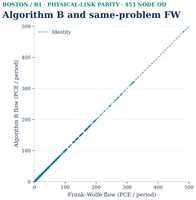

See Algorithm B and same-problem FW
B1's independently recomputed Beckmann objective is 7,922.083942188114 PCE-minutes; same-problem FW is 7,922.08394219 PCE-minutes, with physical-link flow RMSE approximately 5.1e-15 PCE. This is an agreement check on a light, conditional cohort, not a superiority or speedup claim. Full aggregate B1 physical-link flow. B0's accepted objective is 707.057923071 vehicle-minutes; detailed B0 flow is outside the public candidate set and is not plotted here.

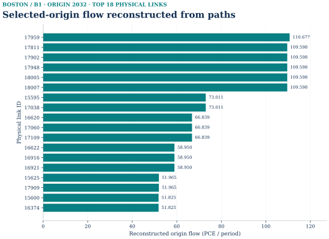

Source records
- Additional saved input: origin_arc_flow.csv; its public acquisition route remains subject to the reproduction audit.
This selected-origin view is reconstructed from exported OD paths. Native Bush merge state, approach proportions, restriction updates and backward labels were not exported. The plotted flow is modeled assignment output, not GPS counts or observed road traffic.
See the numerical evidence and scope in the Official tap-b Algorithm B section.
The accepted B1 evaluation records 453 exported paths, zero cyclic positive-flow origins, max OD residual 0, aggregate link mismatch 5.68e-14, max used-arc/path slack 0, and an independent relative gap of −2.295e-16 (floating-point zero). Its 452 used paths do not create a second citywide model scale. B0 passed the private interface gate but lacks public detailed evaluation/flow artifacts; no B0 figure is inferred.
Original public-release scope: The task-local reproduction route needs separately obtained lawful original inputs and a locally built official tap-b executable; this release includes selected code, accepted B1 aggregate outputs and checks, not the raw demand, native binary, private paths or run logs. Do not substitute the stock TAPLab converter or round the OD to make it accept Boston. No model was rerun during the original public integration. The Boston figures do not establish empirical/citywide validation or native internal Policy Bush state.
Current reproduction review: the exact frozen-input B0 and B1 recipes have completed fresh computation and independent verification. Their pinned input/code overlay is prepared for review; this does not establish a raw-source city-demand rebuild.

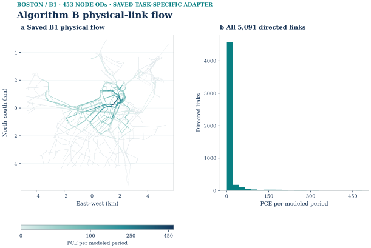


05 / Bounded finite time-expanded optimization
The finite graph supports a bounded fixed-cost, hard-capacity model. CG, ADMM and Lagrangian retain separate traces and certificates even where they use the same graph or reference LP.
Source record · Snapshot 6ce18b8.
Related source records: boston-space-time.md.
One accepted 90-node/125-link, ten-demand, 3-second/100-step fixed-cost hard-capacity pilot; 9,110 time-indexed nodes and 22,217 arcs. Not citywide DTA. Cross-city finite statistics.
This case contains one accepted bounded Boston pilot, not a citywide assignment or a second Boston scale: 90 physical nodes, 125 directed physical links, 10 OD demands, 3-second time steps and a 100-step horizon. It solves a fixed-cost, hard-capacity flow problem on a finite time-expanded graph. Its objective and flows must not be compared numerically with Boston's separate static BPR/Beckmann FW and native-L3 instance, the semantic GPS feedback panel, or the Sioux Falls selected-OD benchmarks.
| Item | Boston bounded pilot |
|---|---|
| Physical nodes | 90 |
| Directed physical links | 125 |
| OD demands | 10 |
| Time step | 3 seconds |
| Horizon | 100 steps |
| Phase-I zero round | 90 |
| Final column pool after closure | 167 |
| Reference-objective agreement | Yes |
| Independent pricing closure | 10/10 demands at 1e-6 |
Related source records: boston_finite_space_time_case_sequence.caption · boston_finite_space_time_case_sequence.caption.
See the numerical evidence and scope in the Two-phase column generation section.
Source-matched R2 reconstruction from saved records. SVG · Exact figure sources · Full caption.

The CG example solves a finite space–time linear flow model with fixed arc costs and explicit capacities. This differs from static BPR/Beckmann assignment. A physical node i becomes a node-time state (i,t); a directed road link becomes a movement arc (i,t) → (j,t + travel steps), and waiting connects (i,t) to (i,t+1). One time step is 3 seconds. The local graph excerpt retains literal saved arc identities, endpoint states and time indices; its schematic row positions and equally spaced displayed columns do not imply geographically spaced nodes or uniformly spaced displayed time indices. Local alternatives at nodes 2032 and 1002 and the actual B07 wait at node 1005 from t9 to t10 remain separate arcs.
Related source records: boston_cg_case_sequence.svg · Exact source hashes and display crops · boston_layered_space_time_construction.caption · boston_physical_to_time_expanded_graph.caption · boston_physical_to_time_expanded_graph.caption.

See Physical roads to time-indexed states
Source-grounded local excerpt; one time step is 3 seconds. The full B07 path arrives at t19; its sink at t100 is bookkeeping, not physical waiting. Editable SVG · Source record · Displayed arcs.

The restricted master first minimizes artificial flow in Phase I. Dual-adjusted pricing on the finite time network supplies a candidate path; adding that column and re-solving the shared-capacity master can redistribute flow across OD demands. After artificial flow is cleared, Phase II minimizes real-path cost against the arc-flow LP reference on the same finite graph. The local construction excerpt explains how states and arcs are formed; the complete B07 path below explains the full ordered column.

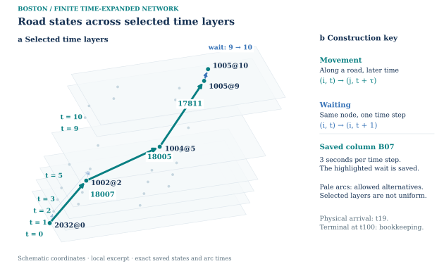

Saved column and computational context
The original round-1 restricted-master evidence records artificial-flow changes B07 −0.364622, B09 −1.083333 and B10 +1.083333 model vehicles. Binding explicit_link_18164_t0 transfers capacity from B10 to B09. These saved reoptimization changes do not establish a unique causal explanation. The construction supports the same column-generation workflow: Phase I restricted master ↔ time-network pricing; add selected columns and re-solve; Phase II minimizes real path cost and compares with the same-instance arc-flow LP reference. The redraw makes no numerical optimization or new certificate claim.

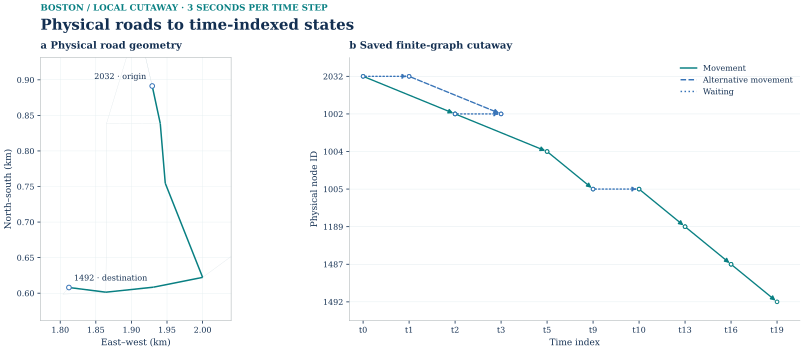

Source records
- docs/assets/three_city_r2/data/boston_construction_edges.csv
- docs/assets/boston/space_time_cg_r4/data/physical_link_flow_geometry.csv
- docs/assets/cg_layered_companions_r1/boston_display_edges.csv
- docs/assets/boston/space_time_cg_r4/data/construction_path.json
- docs/assets/boston/space_time_cg_r4/data/phase_i_round1_od_change.csv
- docs/assets/boston/space_time_cg_r4/data/phase_i_round1_capacity_exchange.csv
Source-matched R2 reconstruction from saved records. SVG · Exact figure sources · Full caption.

Physical pilot network and final movement flow
Actual physical-to-time construction cutaway

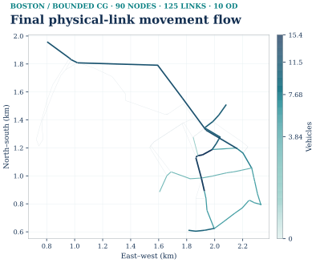


See One accepted generated column Evidence

Physical network. Accepted R3 final path flow is joined by physical_link_id to accepted GMNS Plus 21_Boston geometry. The R4 closure continuation leaves the final physical-link movement flow unchanged within numerical precision. This is the 90-node/125-link pilot subnetwork, not all Boston traffic. Exact 125-link geometry/flow join.
Time-indexed column. The complete accepted column, with 0.364622 modeled vehicles, PHASEI_R1_GEN_B07_001, goes from physical node 2032 through links 18007 → 18005 → 17811, waits at node 1005 from time 9 to 10, then uses 17946 → 17947 → 15592 to node 1492. Movement, waiting and demand-specific source/sink arcs have separate colors and labels. Physical IDs and time indices come from the published selected column, dynamic arcs and dynamic nodes; display coordinates are schematic. The sink at t100 is annotated rather than drawn to x-scale. This is a local cutaway, not the full 9,110-node/22,217-arc time-expanded graph. Physical arrival is t19; the t100 terminal sink is bookkeeping, not physical waiting. The full nine-arc column is model-generated, not an observed trajectory or a path taken from the reference LP.
Related source records: boston_generated_column_time_indexed_path.caption · boston_generated_column_time_indexed_path.caption.
See the numerical evidence and scope in the Two-phase column generation section.
See Physical roads to time-indexed states
See Physical roads to time-indexed states
See Phase I restores feasibility
See One accepted generated column

See Physical roads to time-indexed states

See the numerical evidence and scope in the Two-phase column generation section.
The complete B07 column

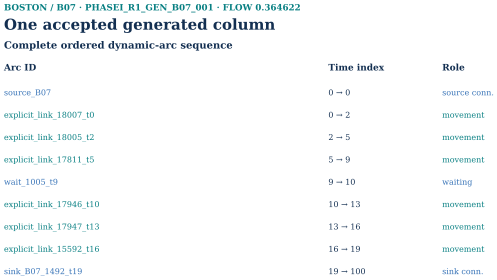
Source-matched R2 reconstruction from saved records. SVG · Exact figure sources · Full caption.

Historical R1 generated-column layout · R1 source record. Both earlier layouts describe the same saved column; the consolidated figure does not create another experiment.

Phase I: artificial-flow clearance and shared capacity
Total artificial flow, all 90 rounds
OD-level artificial-flow clearance, B01–B10

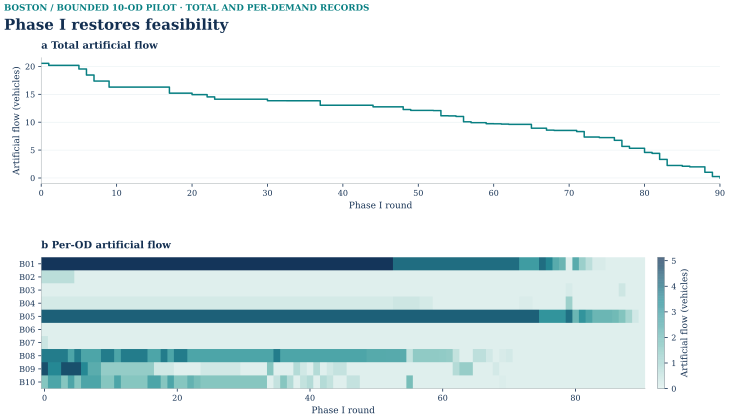

See Phase I restores feasibility Evidence

The total-flow input starts at 20.55361289739253 and reaches zero in round 90. The chart is stepwise, with no smoothing. The per-demand input retains all B01–B10 values for rounds 0–90. A single demand's artificial flow can rise even while total artificial flow falls; this is shared-master feasibility reallocation, not a time series of observed queues.
Related source records: B01–B10 clearance.

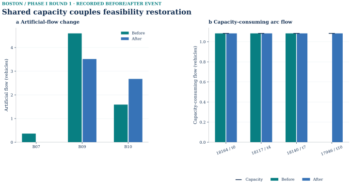


Phase-I round 1 selects new B07 column PHASEI_R1_GEN_B07_001. Its dynamic arc explicit_link_17946_t10 goes from zero to its 1.083333 capacity. Three other saturated arcs, explicit_link_18164_t0, 18117_t4 and 18140_t7, remain at 1.083333/1.083333 but change recorded user B10 → B09. B07 artificial flow changes −0.364622, B09 −1.083333, B10 +1.083333; total artificial flow falls by 0.364622. Raw SciPy/HiGHS capacity marginals retain their solver signs: 18140 t7 moves about −1 → 0, while 18164 t0 moves about 0 → −1. Before/after arc usage and duals · OD changes · Selected column.
These saved before/after restricted-master optima show a cross-OD capacity reallocation. They do not prove the selected B07 path was uniquely necessary for the exchange.
See Phase I restores feasibility
See Shared capacity couples feasibility restoration
Phase II: cost and same-graph LP reference

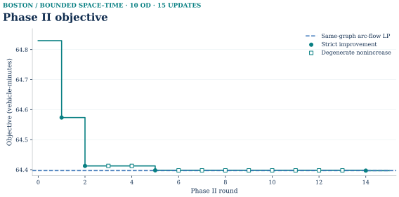


The accepted R3 round log projection starts from feasible objective 64.82967648341466 and reaches 64.39686151152952 after 15 rounds, with 52 added columns and 152 columns in the R3 pool. Strict-improvement and degenerate-nonincreasing commits use different markers. The dashed line is the objective of the arc-flow LP on the same finite time-expanded graph, not a static FW objective. Reference-objective agreement alone did not establish independent pricing closure; that separate R4 certificate appears below.
Movement-only projection and independent pricing closure
| Movement-only projection audit | Released value |
|---|---|
| Physical links | 125 |
| Positive-flow links | 52 |
| Mapping failures | Not reported in public evidence |
| Reconstruction residual | Not reported in public evidence |
| Flow units | Modeled vehicles over the finite horizon |
Projection source record. These are the CG projection audit fields, distinct from the independently released ADMM back-projection check.
See the numerical evidence and scope in the Two-phase column generation section.
Related source records: Sioux Falls finite-case closure · Sioux Falls movement-flow projection · Earlier four-panel summary.
Source-matched R2 reconstruction from saved records. SVG · Exact figure sources · Full caption.

Historical R1 physical-link aggregation layout · R1 source record. Both layouts refer to the same saved movement-only projection.

Accepted final movement-arc flow maps to 125 physical-link IDs; 52 have positive modeled flow. Nonphysical connectors are excluded. Full map and joining record.
Related source records: four-panel summary · boston_cg_summary_panel.svg · boston_time_expanded_to_physical_link_flow.caption · boston_time_expanded_to_physical_link_flow.caption.

See the numerical evidence and scope in the Two-phase column generation section.
Editable SVG · Exact plot-input summary. The final R4 objective 64.39686151152954 and the arc-flow LP objective on the same finite time-expanded graph 64.3968615115296 differ by about 5.68×10⁻¹⁴. Maximum demand residual and capacity violation are each 8.88×10⁻¹⁶; the count of material capacity violations is zero. The accepted final physical-link movement flow is the 125-link movement-only projection described here. A second-machine receiver check is still pending.

Related source records: Validation.
Five closure-continuation rounds
Independent by-demand pricing certificate

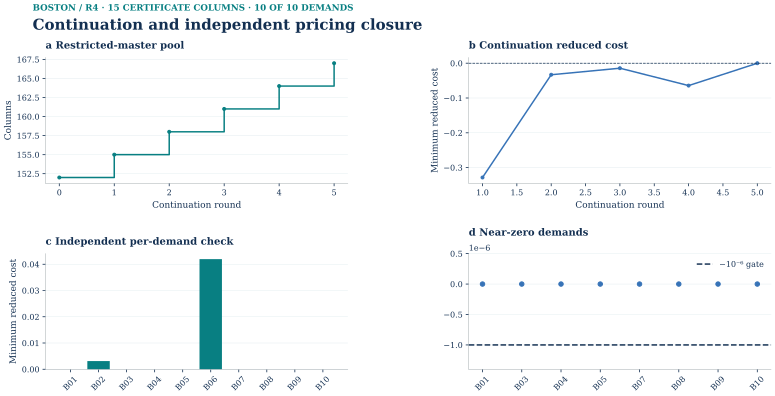


See Continuation and independent pricing closure Evidence

The R4 continuation trace records five DEGENERATE_NONINCREASE commits and final-column-pool growth 152 → 167. All 15 added certificate columns have zero final flow, and the objective remains 64.39686151152954 within numerical precision. The by-demand full-DAG check finds no ungenerated path with reduced cost below −1e−6 for B01–B10. Floating-point values near zero are not improving columns. Existing-column KKT/stationarity and ungenerated-path pricing closure are different checks.
See Final physical-link movement flow
See Continuation and independent pricing closure
ADMM R2_S: separate frozen-policy holdout
Source record · Snapshot 6ce18b8.
The Boston ADMM R2 run used the already-selected, frozen R2_S source, input-derived fixed-rho rule and independent gates. It is one bounded finite time-expanded, fixed-cost, shared-capacity pilot: 10 ODs, 90 physical nodes, 125 directed physical links, 3-second steps and a 100-step horizon. It is not a citywide Boston assignment or static Beckmann UE.
Related source records: admm_sioux_freeze_boston_holdout.caption.
| Accepted saved result | Value |
|---|---|
| ADMM iterations | 253 |
| ADMM objective (vehicle-minutes) | 64.39729165541078 |
| Same-graph arc-flow LP objective (vehicle-minutes) | 64.3968615115296 |
| Relative objective gap | 6.68e-6 |
| Max local conservation residual (vehicles) | 7.62e-8 |
| Max capacity excess (vehicles) | 9.24e-7 |
| Max physical back-projection error (vehicles) | 0 |
| Fixed rho (frozen policy) | 0.024261355 |
| Saved status | SOLVER_CONVERGED |
| Maximum local KKT check | 4.44e-16 |
| Maximum projection check | 8.88e-16 |
Related source records: admm_boston_10od_case_sequence.caption.
All declared independent gates passed. The independent evaluator made zero optimizer calls. The policy was frozen after Sioux development, and no Boston retuning or scientific rerun contributed to these figures. Frozen-policy primal residual ||x − z|| is measured in vehicles; dual residual ρ ||z − z_previous|| is measured in cost per vehicle. They therefore have separate axes and stopping thresholds. Original-unit conservation/capacity residuals are vehicles, and the objective is vehicle-minutes.

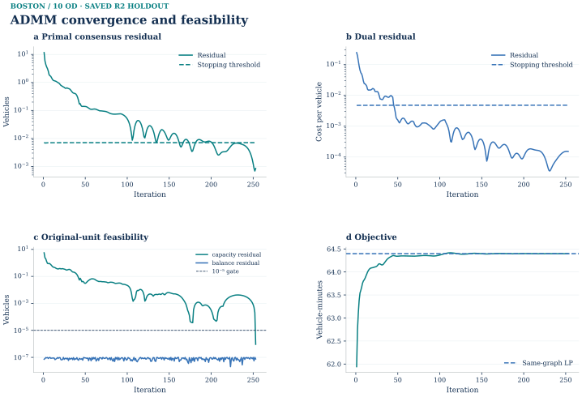

Source records
- Additional saved input: history.csv; its public acquisition route remains subject to the reproduction audit.
- Additional saved input: evaluation.json; its public acquisition route remains subject to the reproduction audit.
- Additional saved input: result.json; its public acquisition route remains subject to the reproduction audit.
- Additional saved input: ADMM_R2_FROZEN_POLICY.json; its public acquisition route remains subject to the reproduction audit.
- docs/assets/boston/space_time_cg_r4/data/validation_summary.json
See the numerical evidence and scope in the ADMM section.
Editable six-panel SVG · original accepted convergence SVG · original accepted physical scatter SVG


The 125 saved project-generated per-link ADMM/LP comparison rows are joined by physical_link_id to previously public Boston GMNS Plus 21_Boston physical-link geometry and identifiers. The public repository already records source commit 116447ab641cca1ed34797d019c8e704063393c3 and Apache-2.0 terms. The geometry file's SHA-256 is 673405a563e325678f79cbbaa1379d23a0aff2691c0b7f4843715c38170a7a84. No basemap or private dynamic arcs are embedded.
Related source records: admm_boston_10od_final_physical_link_flow.caption.

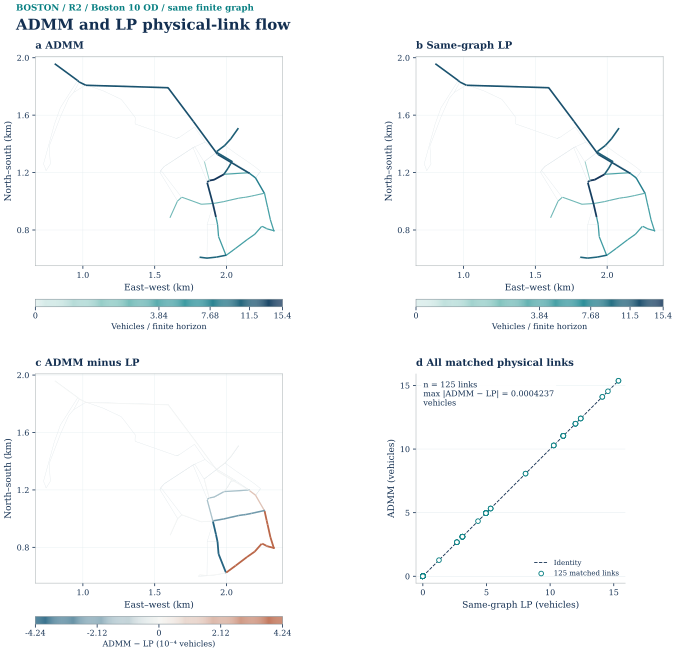

See ADMM and LP physical-link flow
The absolute panels use one shared ADMM/LP scale. The signed map is centered at zero and labels its actual micro-scale maximum (4.24e-4 vehicles); it does not magnify the scientific value. The full permitted 125-row derived ADMM/LP table contains only physical-link ID, two derived flow totals and signed difference. Objective closeness does not imply identical primal route/time splits.
Related source records: admm_boston_10od_minus_lp.caption.

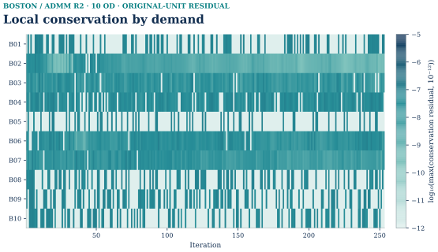

Source records
- Additional saved input: local_conservation_by_commodity_iteration.csv; its public acquisition route remains subject to the reproduction audit.
The heatmap plots all ten saved commodity-by-iteration balance residuals as log10(max(residual, 1e-12)) and marks the frozen 1e-5 original-unit gate. It is a plot of saved derived evidence, not a state replay. All ten commodities are included. The logarithmic floor is a display convention; it does not replace the saved residuals with zeros.
Related source records: admm_boston_10od_local_conservation_heatmap.caption.
Rights basis: “User-authorized project-generated derived output, joined only to previously public Boston GMNS geometry and identifiers.” The approved release covers the bounded numerical summary, figures, derived per-link table, captions, hashes and limitations. It does not include private dynamic_arc.csv or dynamic_demand.csv, state.npz, full dynamic-arc/commodity arrays, raw LP reference-flow files, private run logs or handoff archives. Public geometry remains credited to GMNS Plus 21_Boston under Apache-2.0; the project's existing Boston source record and visual provenance record provide the local publication trail.
Each new figure has editable SVG, caption/limitations and a source-hash sidecar. The plotting-only renderer uses accepted saved results and previously public physical geometry. This ADMM result is separate from the bounded Boston CG pilot; a CG full-DAG pricing certificate is not an ADMM certificate or an independent ADMM convergence theorem.
See ADMM convergence and feasibility
See ADMM convergence and feasibility
See ADMM and LP physical-link flow

Lagrangian R2: feasible recovery, unmet bound gate
The separate Lagrangian R2 transfer recovered a feasible primal but missed its frozen 1% duality-gap gate at 1.1002%; it is not an accepted Boston Lagrangian result. The earlier ADMM R1 record is retained as historical context, not substituted for the accepted R2_S holdout. The saved R2 trace covers iterations 1–300; absent best-primal or gap values remain missing rather than being drawn as zero. The display is derived from the approved history and does not broaden the raw-history publication boundary.

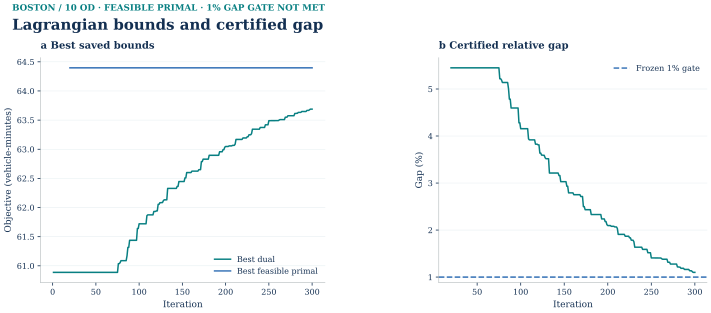

Source records
- Additional saved input: history.csv; its public acquisition route remains subject to the reproduction audit.
- docs/assets/homepage_evidence_r2/BOSTON_ROW17_DERIVED_FIGURE_APPROVAL.json

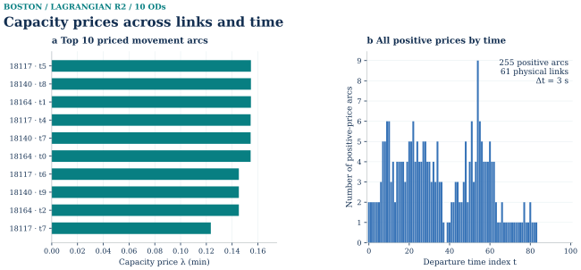

Source records
- Additional saved input: best_multipliers.csv; its public acquisition route remains subject to the reproduction audit.
- Additional saved input: result.json; its public acquisition route remains subject to the reproduction audit.
- Additional saved input: evaluation.json; its public acquisition route remains subject to the reproduction audit.

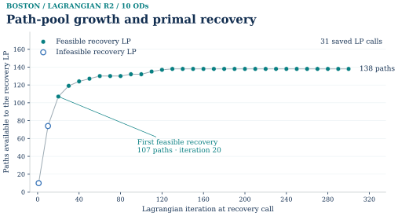

Source records
- Additional saved input: recovery_history.json; its public acquisition route remains subject to the reproduction audit.
- Additional saved input: result.json; its public acquisition route remains subject to the reproduction audit.
- Additional saved input: evaluation.json; its public acquisition route remains subject to the reproduction audit.
06 / Data and computational reproduction contracts
Current experiment-by-experiment reproduction register
A successful numerical check is scoped to the exact recipe and preserved input state. It does not establish a complete source-to-result replay for every city workflow. Open the complete 108-record reproduction inventory for data acquisition, source versions, environments, exact commands, output tolerances and recorded verification receipts.
The unified recipes and complete computational checkout are prepared for review. They have not been published to GitHub. Public source links and frozen result records retain their original release status.
| Experiment / instance | Current status | Scope and remaining requirements | Run evidence |
|---|---|---|---|
GMNS/H3 source model and exchange validationInstance contractphysical nodes: 2852; physical links: 5091; fine zones: 177; parent zones: 9; export nodes: 3029; export links: 5445; nonphysical access arcs: 354 | Saved evidence checked; fresh recipe unavailable | Structural and geometry validation actually pass. Does not reacquire original GMNS, generate clipped H3 geometry, or rerun assignment. Published mcl_solver fields do allow audited S1/S2 prepared-input assignment replay separately. Remaining: Source GMNS exchange, upstream reader and roundtrip evidence are available. Source rebuild must use pinned GMNS source and distinguish exchange validation from original data acquisition. | Recipe and checks |
MassGIS residential/nonresidential activity allocationInstance contractrun: boston_activity_prior_r1_20260922; assessment records: 54411; unique parcels: 13585; fine zones: 177; parent zones: 9 | Replay blocked by stated requirements | Area prior distinct from ACS households. Contains the residential prior panel of the merged population figure; does not establish jobs or calibrated travel. Remaining: Recovered activity preparation and sealed delivery. Inputs include property assessment source records; only source URLs/instructions and aggregate derived model tables may enter the public integration. Historical v1/v2 must remain distinct. | Recipe and checks |
Historical network-proxy AM baseline and stressInstance contractrun: boston_quality_r1_20260922; period: 2026-09-22 07:00–09:00; physical links: 5091; scenario: legacy-network-proxy | Replay blocked by stated requirements | Retained historical scenario; do not substitute later ACS semantic S1/S2 or ABS choices. Daily total/modes/gravity/occupancy are assumptions. Remaining: Historical proxy baseline precedes corrected quality/semantic branches. Generic FW alone is not a complete replay; locate matching historical input lock before enabling run. | Recipe and checks |
Historical activity-informed 50,000 daily-trip prior and AM assignmentInstance contractrun: boston_activity_prior_r1_20260922; period: 2026-09-22 07:00–09:00; physical links: 5091; scenario: activity-informed-50000 | Replay blocked by stated requirements | Retained historical scenario; do not substitute later ACS semantic S1/S2 or ABS choices. Daily total/modes/gravity/occupancy are assumptions. Remaining: Recovered activity preparation and sealed delivery. Inputs include property assessment source records; only source URLs/instructions and aggregate derived model tables may enter the public integration. Historical v1/v2 must remain distinct. | Recipe and checks |
ACS 2024 block-group to clipped H3 population/household allocationInstance contractsource block groups: 174; crosswalk rows: 724; H3 zones: 177; population: 171049.52015979076; households: 79537.49255074753 | Saved evidence checked; fresh recipe unavailable | Public saved crosswalk arithmetic verified; this is not fresh Census acquisition or GIS overlay. Remaining: Recovered ACS/CTPS population-allocation, production, gravity/IPF and purpose-time pipeline. Existing local script includes later semantic corrections: use archived exact source/config for historical branch, not the latest script under an old experiment label. No raw private source records copied. | Recipe and checks |
ACS household × transferred CTPS purpose ratesInstance contractzones: 177; purposes: 6; rows: 1062; modelled daily person trips: 816054.6735706696 | Saved evidence checked; fresh recipe unavailable | Saved household-to-production arithmetic and table integrity checked. Does not recalibrate trip-generation rates or imply observed trips. Remaining: Recovered ACS/CTPS population-allocation, production, gravity/IPF and purpose-time pipeline. Existing local script includes later semantic corrections: use archived exact source/config for historical branch, not the latest script under an old experiment label. No raw private source records copied. | Recipe and checks |
Gravity/IPF, directional and purpose/time conversionInstance contractzones: 177; HBW midday person trips: 22807.21691394174; positive interzonal OD: 30790; positive intrazonal OD: 171 | Saved evidence checked; fresh recipe unavailable | One complete HBW midday projected matrix is public; matrix arithmetic validated separately. Saved sample/ledger are not the full regional multi-purpose/time OD dataset. Remaining: Recovered ACS/CTPS population-allocation, production, gravity/IPF and purpose-time pipeline. Existing local script includes later semantic corrections: use archived exact source/config for historical branch, not the latest script under an old experiment label. No raw private source records copied. | Recipe and checks |
Planned transit/walk network, availability, itinerary legs and faresInstance contractfixed panel pairs: 36; departures: 12:30, 12:40, 12:50; objects: 108; service date: 2026-09-21 | Saved evidence checked; fresh recipe unavailable | Saved table hashes/SQLite checks, available-transit ride requirement and restoration tables checked. Does not reroute itineraries or reproduce fares from raw GTFS. Remaining: Prepared aggregate skims and association evidence located. Source rebuilding also needs dated GTFS, OSM/GMNS and observation acquisition policy. Raw GPS must not be bundled; aggregate fixed-panel skims support bounded downstream replay. | Recipe and checks |
GPS source positions, accepted association and route-60 sampleInstance contractall segments: 235; not selected: 205; no route: 2; returned route: 28; joint quality pass: 9; example route: 60; sample positions: 12; path link occurrences: 26 | Saved evidence checked; fresh recipe unavailable | Actual public record trace succeeds. Route-60 map sample is not the route-749 numeric service-feedback event. Capture does not coincide with engineering AM window. Remaining: Prepared aggregate skims and association evidence located. Source rebuilding also needs dated GTFS, OSM/GMNS and observation acquisition policy. Raw GPS must not be bundled; aggregate fixed-panel skims support bounded downstream replay. | Recipe and checks |
Historical pre-semantic-fix service feedback R1Instance contractobjects: 108; eligible objects: 78; S1 vehicle trips: 202.078384; S2 vehicle trips: 202.033061; changed links: 87 | Replay blocked by stated requirements | Historical transit/fare/directional version. Do not replace its S2 202.033061/87 changed links with semantic-fix S2 202.070733/78 changed links. Remaining: Recovered ACS/CTPS population-allocation, production, gravity/IPF and purpose-time pipeline. Existing local script includes later semantic corrections: use archived exact source/config for historical branch, not the latest script under an old experiment label. No raw private source records copied. | Recipe and checks |
Semantic-fix S1: prepared-input assignment replayInstance contractscenario: S1; objects: 108; common loaded objects: 78; physical OD: 26; physical links: 5091; vehicle trips: 202.078384 | Prepared-input recipe and verification available | Prepared-input assignment stage only. The physical mcl_solver fields and public zone/access mapping are converted to a solver instance, then unmodified public mcl_assignment Frank–Wolfe is run and independently checked against the published S1 link flows. The original tap_frank_wolfe implementation is not invoked. The upstream service-feedback/four-stage/GPS chain is not recomputed; this is distinct from conditional absolute choice. | Recipe and checks · Verification receipt |
Semantic-fix S2: prepared-input assignment replayInstance contractscenario: S2; objects: 108; common loaded objects: 78; physical OD: 26; physical links: 5091; vehicle trips: 202.070733 | Prepared-input recipe and verification available | Prepared-input assignment stage only. The physical mcl_solver fields and public zone/access mapping are converted to a solver instance, then unmodified public mcl_assignment Frank–Wolfe is run and independently checked against the published S2 link flows. The original tap_frank_wolfe implementation is not invoked. The upstream service-feedback/four-stage/GPS chain is not recomputed; this is distinct from conditional absolute choice. | Recipe and checks · Verification receipt |
Semantic-fix Srestore service-feedback branchInstance contractscenario: Srestore; objects: 108; common loaded objects: 78; physical OD: 26; physical links: 5091; vehicle trips: None | Saved evidence checked; fresh recipe unavailable | Rebuilt saved database and checked restoration comparisons; restoration routing and choice were not re-executed. Remaining: S1, S2 exploratory overlay and Srestore use the semantic-fixed service-feedback model. They must not share the new conditional absolute-choice recipe; aggregate prepared-data replay is a different coverage boundary from full raw-source reconstruction. | Recipe and checks |
Conditional absolute-attribute choice: ABS_PLANNEDInstance contractscenario: ABS_PLANNED; objects: 108; known objects: 87; unknown objects: 21; loaded common objects: 78; physical OD: 26; nest scales: UNIT_BOUNDARY_PRIMARY, AUTO_0_7_SENSITIVITY | Fresh computation and verification passed | Recomputes all three declared conditional scenarios from frozen 36-OD aggregate skims. It does not reconstruct raw-source skims, infer population composition, or calibrate the transferred choice model. | Recipe and checks · Verification receipt |
Conditional absolute-attribute choice: ABS_OBS_EXPLORATORYInstance contractscenario: ABS_OBS_EXPLORATORY; objects: 108; known objects: 87; unknown objects: 21; loaded common objects: 78; physical OD: 26; nest scales: UNIT_BOUNDARY_PRIMARY, AUTO_0_7_SENSITIVITY | Fresh computation and verification passed | Recomputes all three declared conditional scenarios from frozen 36-OD aggregate skims. It does not reconstruct raw-source skims, infer population composition, or calibrate the transferred choice model. | Recipe and checks · Verification receipt |
Conditional absolute-attribute choice: ABS_RESTOREInstance contractscenario: ABS_RESTORE; objects: 108; known objects: 87; unknown objects: 21; loaded common objects: 78; physical OD: 26; nest scales: UNIT_BOUNDARY_PRIMARY, AUTO_0_7_SENSITIVITY | Fresh computation and verification passed | Recomputes all three declared conditional scenarios from frozen 36-OD aggregate skims. It does not reconstruct raw-source skims, infer population composition, or calibrate the transferred choice model. | Recipe and checks · Verification receipt |
26-OD ABS_PLANNED static FWInstance contractscenario: ABS_PLANNED; physical links: 5091; physical OD: 26; vehicle trips: 203.6604786350987 | Fresh computation and verification passed | Calls unchanged public mcl_assignment FW on the exact frozen ABS_PLANNED physical demand. The original config is copied with scenario prose corrected only; all numerical fields and effective two-hour capacities are preserved. Verification reconstructs OD/path/link feasibility and full-network gap, then compares original saved physical-link flows and the independently recomputed Beckmann integral. These light cases satisfy the gate at initial AON (zero line-search iterations); this is a numerical result replay, not historical runtime replication, upstream mode-choice re-estimation, or a semantic-fix S1/S2 result. | Recipe and checks · Verification receipt |
26-OD ABS_OBS_EXPLORATORY static FWInstance contractscenario: ABS_OBS_EXPLORATORY; physical links: 5091; physical OD: 26; vehicle trips: 203.6573680559407 | Fresh computation and verification passed | Calls unchanged public mcl_assignment FW on the exact frozen ABS_OBS_EXPLORATORY physical demand. The original config is copied with scenario prose corrected only; all numerical fields and effective two-hour capacities are preserved. Verification reconstructs OD/path/link feasibility and full-network gap, then compares original saved physical-link flows and the independently recomputed Beckmann integral. These light cases satisfy the gate at initial AON (zero line-search iterations); this is a numerical result replay, not historical runtime replication, upstream mode-choice re-estimation, or a semantic-fix S1/S2 result. | Recipe and checks · Verification receipt |
ABS_PLANNED 130-path finite SLSQP referenceInstance contractphysical links: 5091; physical OD: 26; path count: 130; vehicle trips: 203.6604786350987 | Fresh computation and verification passed | Public SLSQP is called unchanged with frozen f0 (already optimal for this light case), maxiter500 and ftol1e-10. Independent checks cover this finite pool, not new path generation, native L3 or cold-start speed. The original saved objective is a comparison reference only. | Recipe and checks · Verification receipt |
Native Diagnostic L3 rank 26 outer 02Instance contractphysical links: 5091; physical OD: 26; path count: 130; rank: 26; outer: 2; gamma: 0 | Fresh computation and verification passed | Frozen26OD/130path experiment only. Not expanded-scale native success, exact UE or raw-data reconstruction. Published stale whole-file source hash repaired using exact mathematical AST equivalence. | Recipe and checks · Verification receipt |
Native Diagnostic L3 rank 52 outer 02Instance contractphysical links: 5091; physical OD: 26; path count: 130; rank: 52; outer: 2; gamma: 0 | Fresh computation and verification passed | Frozen26OD/130path experiment only. Not expanded-scale native success, exact UE or raw-data reconstruction. Published stale whole-file source hash repaired using exact mathematical AST equivalence. | Recipe and checks · Verification receipt |
Expanded 500 source-OD planned-service FWInstance contractselected source OD: 500; loaded node OD: 453; physical links: 5091; vehicle PCE: 1936.238474910001 | Saved evidence checked; fresh recipe unavailable | 5091 saved physical-link flows re-evaluated against exact prepared public BPR links. Objective agrees within 1.7e-10; saved OD/gap certificates are not fresh checks without demand/path inputs. This tier is independent of the 26-OD accepted native controls. Remaining: Exact frozen scalable source, inputs and FW run located; large replay not invoked here. Source-OD counts must be distinguished from physical endpoint aggregation. | Recipe and checks |
Expanded 500 finite-path resource-gated attemptInstance contractselected source OD: 500; loaded node OD: 453; physical links: 5091; vehicle PCE: 1936.238474910001 | Not run | Historical attempts remain distinct from accepted expanded FW; do not claim full-path/native success. Public generic two-OD fixture success does not change these statuses. Remaining: Resource-gated original attempt, not an accepted completed experiment. Preserve not-run/attempt status even though staging and generic method code exist. | Recipe and checks |
Expanded 500 native-l3 resource-gated attemptInstance contractselected source OD: 500; loaded node OD: 453; physical links: 5091; vehicle PCE: 1936.238474910001; requested rank fractions: 0.25, 0.5; realized accepted rank: None | Not run | Historical attempts remain distinct from accepted expanded FW; do not claim full-path/native success. Public generic two-OD fixture success does not change these statuses. Remaining: Resource-gated original attempt, not an accepted completed experiment. Preserve not-run/attempt status even though staging and generic method code exist. | Recipe and checks |
Expanded 2000 source-OD planned-service FWInstance contractselected source OD: 2000; loaded node OD: 1684; physical links: 5091; vehicle PCE: 5815.568823761062 | Saved evidence checked; fresh recipe unavailable | 5091 saved physical-link flows re-evaluated against exact prepared public BPR links. Objective agrees within 1.7e-10; saved OD/gap certificates are not fresh checks without demand/path inputs. This tier is independent of the 26-OD accepted native controls. Remaining: Exact frozen scalable source, inputs and FW run located; large replay not invoked here. Source-OD counts must be distinguished from physical endpoint aggregation. | Recipe and checks |
Expanded 2000 finite-path resource-gated attemptInstance contractselected source OD: 2000; loaded node OD: 1684; physical links: 5091; vehicle PCE: 5815.568823761062 | Not run | Historical attempts remain distinct from accepted expanded FW; do not claim full-path/native success. Public generic two-OD fixture success does not change these statuses. Remaining: Resource-gated original attempt, not an accepted completed experiment. Preserve not-run/attempt status even though staging and generic method code exist. | Recipe and checks |
Expanded 2000 native-l3 resource-gated attemptInstance contractselected source OD: 2000; loaded node OD: 1684; physical links: 5091; vehicle PCE: 5815.568823761062; requested rank fractions: 0.25, 0.5; realized accepted rank: None | Not run | Historical attempts remain distinct from accepted expanded FW; do not claim full-path/native success. Public generic two-OD fixture success does not change these statuses. Remaining: Resource-gated original attempt, not an accepted completed experiment. Preserve not-run/attempt status even though staging and generic method code exist. | Recipe and checks |
Expanded all source-OD planned-service FWInstance contractselected source OD: 30790; loaded node OD: 17522; physical links: 5091; vehicle PCE: 16259.122416746477 | Saved evidence checked; fresh recipe unavailable | 5091 saved physical-link flows re-evaluated against exact prepared public BPR links. Objective agrees within 1.7e-10; saved OD/gap certificates are not fresh checks without demand/path inputs. This tier is independent of the 26-OD accepted native controls. Remaining: Exact frozen scalable source, inputs and FW run located; large replay not invoked here. Source-OD counts must be distinguished from physical endpoint aggregation. | Recipe and checks |
Expanded all finite-path resource-gated attemptInstance contractselected source OD: 30790; loaded node OD: 17522; physical links: 5091; vehicle PCE: 16259.122416746477 | Not run | Historical attempts remain distinct from accepted expanded FW; do not claim full-path/native success. Public generic two-OD fixture success does not change these statuses. Remaining: Resource-gated original attempt, not an accepted completed experiment. Preserve not-run/attempt status even though staging and generic method code exist. | Recipe and checks |
Expanded all native-l3 resource-gated attemptInstance contractselected source OD: 30790; loaded node OD: 17522; physical links: 5091; vehicle PCE: 16259.122416746477; requested rank fractions: 0.25, 0.5; realized accepted rank: None | Not run | Historical attempts remain distinct from accepted expanded FW; do not claim full-path/native success. Public generic two-OD fixture success does not change these statuses. Remaining: Resource-gated original attempt, not an accepted completed experiment. Preserve not-run/attempt status even though staging and generic method code exist. | Recipe and checks |
Official tap-b through task-local lossless adapter: B0Instance contractphysical links: 5091; physical nodes: 2852; physical OD: 26; vehicle PCE: 203.6604786350987 | Fresh computation and verification passed | 26-OD original ABS_PLANNED static case; independent full-graph Algorithm B validation. | Recipe and checks · Verification receipt |
Official tap-b through task-local lossless adapter: B1Instance contractphysical links: 5091; physical nodes: 2852; physical OD: 453; vehicle PCE: 1936.2384749100008 | Fresh computation and verification passed | 500 selected source OD planned case aggregated to 453 positive physical endpoint pairs; independent full-graph Algorithm B validation. | Recipe and checks · Verification receipt |
Bounded finite time-expanded network and actual B07 columnInstance contractphysical nodes: 90; physical links: 125; OD: 10; time step seconds: 3; horizon steps: 100; dynamic nodes: 9110; dynamic arcs: 22217 | Saved evidence checked; fresh recipe unavailable | Recovered exact bounded Boston graph, R2/R3 implementation and R4 continuation/certificate locally. The later R4 closure is separately verified; it is not substituted for this earlier construction, LP or Phase I/II record. The graph/demand identity is shared with the private Boston distributed-method inputs; no raw input/state payload is copied into this release. Remaining: Public download/release of the exact bounded Boston graph and demand remains unresolved under the prior explicit raw-input exclusion.; A portable public CG run package must include the exact R2/R3 solver and R4 continuation, not the older generic RC5 engine. | Recipe and checks |
Same-graph finite arc-flow LP referenceInstance contractphysical nodes: 90; physical links: 125; OD: 10; time step seconds: 3; horizon steps: 100; dynamic nodes: 9110; dynamic arcs: 22217 | Saved evidence checked; fresh recipe unavailable | Recovered exact bounded Boston graph, R2/R3 implementation and R4 continuation/certificate locally. The later R4 closure is separately verified; it is not substituted for this earlier construction, LP or Phase I/II record. The graph/demand identity is shared with the private Boston distributed-method inputs; no raw input/state payload is copied into this release. Remaining: Public download/release of the exact bounded Boston graph and demand remains unresolved under the prior explicit raw-input exclusion.; A portable public CG run package must include the exact R2/R3 solver and R4 continuation, not the older generic RC5 engine. | Recipe and checks |
Two-phase CG pilot, R2/R3 Phase I and Phase IIInstance contractphysical nodes: 90; physical links: 125; OD: 10; time step seconds: 3; horizon steps: 100; dynamic nodes: 9110; dynamic arcs: 22217 | Saved evidence checked; fresh recipe unavailable | Recovered exact bounded Boston graph, R2/R3 implementation and R4 continuation/certificate locally. The later R4 closure is separately verified; it is not substituted for this earlier construction, LP or Phase I/II record. The graph/demand identity is shared with the private Boston distributed-method inputs; no raw input/state payload is copied into this release. Remaining: Public download/release of the exact bounded Boston graph and demand remains unresolved under the prior explicit raw-input exclusion.; A portable public CG run package must include the exact R2/R3 solver and R4 continuation, not the older generic RC5 engine. | Recipe and checks |
R4 full-DAG pricing closure continuation on the same CG pilotInstance contractphysical nodes: 90; physical links: 125; OD: 10; time step seconds: 3; horizon steps: 100; dynamic nodes: 9110; dynamic arcs: 22217 | Saved evidence checked; fresh recipe unavailable | Recovered exact bounded Boston graph, R2/R3 implementation and R4 continuation/certificate locally. Recomputed full-DAG pricing closure with zero optimizer calls: 167 columns, 10 demands, objective 64.39686151152954, demand/capacity/stationarity residuals below 1e-15. The graph/demand identity is shared with the private Boston distributed-method inputs; no raw input/state payload is copied into this release. Remaining: Public download/release of the exact bounded Boston graph and demand remains unresolved under the prior explicit raw-input exclusion.; A portable public CG run package must include the exact R2/R3 solver and R4 continuation, not the older generic RC5 engine. | Recipe and checks |
Lagrangian R2 10-OD frozen-policy transfer (failed acceptance gate)Instance contractphysical nodes: 90; physical links: 125; OD: 10; time step seconds: 3; horizon steps: 100; dynamic nodes: 9110; dynamic arcs: 22217 | Saved evidence checked; fresh recipe unavailable | Recovered exact historical inputs, frozen plan and complete saved state locally; all original input hashes match. Recomputed numerical feasibility and objective with the unchanged independent evaluator (zero optimizer calls). The frozen numerical policy is P07. The 1.10016% certified gap still fails the 1% acceptance threshold; successful consistency checks do not change the historical failed acceptance status. Exact city inputs and full states remain outside the previous public release scope; this is a local saved-state verification, not a new solve or a public runnable recipe. Remaining: The exact historical dynamic arc/demand inputs and full states were excluded from the earlier public release. A public data acquisition/release route is still needed. | Recipe and checks |
ADMM R2_S frozen-policy Boston 10-OD holdoutInstance contractphysical nodes: 90; physical links: 125; OD: 10; time step seconds: 3; horizon steps: 100; dynamic nodes: 9110; dynamic arcs: 22217; iterations: 253 | Saved evidence checked; fresh recipe unavailable | Recovered exact historical inputs, frozen plan and complete saved state locally; all original input hashes match. Recomputed numerical feasibility and objective with the unchanged independent evaluator (zero optimizer calls). This is the frozen Boston 10-OD holdout. Exact city inputs and full states remain outside the previous public release scope; this is a local saved-state verification, not a new solve or a public runnable recipe. Remaining: The exact historical dynamic arc/demand inputs and full states were excluded from the earlier public release. A public data acquisition/release route is still needed. | Recipe and checks |
LODES residence–workplace employment associationInstance contractstatus: not acquired | No accepted computational experiment | Do not present MassGIS attraction proxy as LODES jobs or residence–workplace OD. Remaining: Official host timed out during historical acquisition; no source data, derived association or accepted experiment. | Recipe and checks |
Frozen implementation notes and earlier availability statements
These retained source notes describe their original release snapshot and historical verification scope. Current recipe availability, verification receipts and remaining requirements are listed above; the older notes do not override that register.
The linked tools support different levels of reproduction: inspecting saved records, rebuilding interface/database products, or recomputing a model from separately obtained complete inputs. A successful saved-record query is not a new optimization run.
- GMNS Plus
21_Boston, commit116447ab641cca1ed34797d019c8e704063393c3, Apache-2.0. The physical road slice and source-field derivatives are included with the source license. - MBTA GTFS feed
mdb-437and 12 MBTA V3 vehicle-position snapshots were used locally. The raw ZIP and raw JSON snapshots are excluded; only derived research relations with hashed vehicle identifiers are included. - H3 zone identifiers are project model identifiers. They are not source TAZ, Mobility Database city, feed, or GHSL identifiers.
- MassGIS Property Tax Parcels official FeatureServer item
73d4c766167848b795f1048cad3919c7supplies the activity run. The redistributed slice contains only selected parcel/assessment identifiers, fiscal year, use classification, year built, official building/residential area, units, stories text, and geometry. No owner, mailing, contact, site-address, or registry fields were requested. Boston FY2023 and Cambridge FY2026 are both retained; their different vintages are not merged into one reference year. - Source parcel geometry, assessment record, and derived H3 allocation remain separate. Area overlay is performed in EPSG:32619, outside-core allocation is retained, and r7 values aggregate the r9 table.
- U.S. Census LODES8 Massachusetts 2023 WAC/RAC/OD was identified but not downloaded because
lehd.ces.census.govtimed out after bounded sandboxed and approved unrestricted attempts. Consequently this release contains no employment association. WAC, RAC, and OD would describe workplace jobs, residence-associated jobs, and home–work job associations respectively—not all-purpose travel. - The original demand remains an engineering network proxy. The independent activity-informed scenario uses official assessment area as a spatial prior, but its 50,000 daily total, beta, mode shares, AM share, and occupancy remain assumptions; neither scenario is observed travel demand.
- Semantic four-stage/GPS saved example, including a read-only query database.
- Conditional probabilities, source scope and ABS_OBS FW result.
- FW / finite-path / native-L3 same-instance comparison, figures and limits.
- Bounded finite space–time CG, all figure families, public plot inputs and R4 closure.
- Frozen-policy finite space–time ADMM R2_S holdout, matched figures and derived physical-link table.
- Shared method implementation and optional native reproduction boundary.
Population arithmetic and upstream reacquisition
From the repository root, using Python 3.12+ standard library only:
python -B tools/population/verify_saved_allocation.py `
--data-dir examples/boston/population_r1/data `
--generation examples/boston/behavior_feedback_r1_semantic_fix_r1/data/trip_generation_by_purpose.csv `
--ledger examples/boston/behavior_feedback_r1_semantic_fix_r1/data/external_flow_ledger.csv
The helper validates required fields and string GEOIDs, the selected row, source × stored full-area share, per-H3 aggregation, H_i × r_p, and the distinct outside-core status; it exits nonzero for inconsistent inputs. --help documents configurable paths and an optional output JSON. It verifies saved-table arithmetic, not fresh county acquisition, spatial intersections, source MOE propagation, IPF, mode choice or assignment. The companion immutable BOSTON_BEHAVIOR_FEEDBACK_PUBLIC_DATA_EN.zip (SHA-256 a3f33648c4dff3d3f462e4bbf4ebedb198665afd165688d0f481c88cded31d71) retains more of the original data chain; no live Release URL is asserted here.
Use the machine-readable source/asset registry for the six recorded county JSON/GeoJSON snapshot hashes, fields and URLs. The exact historical raw files are not in this source upload. The following are reconstructed request recipes, not recovered historical request logs; availability of current bodies has not been verified:
https://api.censusreporter.org/1.0/data/show/acs2024_5yr?table_ids=B01003%2CB11001&geo_ids=150%7C05000US25025
https://api.censusreporter.org/1.0/data/show/acs2024_5yr?table_ids=B01003%2CB11001&geo_ids=150%7C05000US25017
https://api.censusreporter.org/1.0/data/show/acs2024_5yr?table_ids=B01003%2CB11001&geo_ids=150%7C05000US25021
https://api.censusreporter.org/1.0/geo/show/tiger2024?geo_ids=150%7C05000US25025
https://api.censusreporter.org/1.0/geo/show/tiger2024?geo_ids=150%7C05000US25017
https://api.censusreporter.org/1.0/geo/show/tiger2024?geo_ids=150%7C05000US25021
The recorded builder expects these files as raw/demographics/acs2024_5yr_bg/{suffolk_025,middlesex_017,norfolk_021}.json and matching _tiger2024.geojson, plus database/zones/zone.csv with clipped_geometry_wkt, the saved MassGIS activity prior and road impedance inputs under a supplied --root. It filters intersecting block groups after reading all three counties, projects to EPSG:32619 and produces the published table types. With a complete compatible instance assembled independently, its actual entry point is:
python -B examples/boston/behavior_feedback_r1/pipeline/build_regional_demand.py --root "path/to/complete-instance" --run-dir "path/to/new-output"
Its main() continues into gravity/IPF and other demand steps; it is not a population-only command and was not run for the original documentation update. A raw-source rebuild requires all those inputs, accepted code dependencies and source terms. The present public exchange includes clipped H3 geometry, but not all exact county raw JSON/GeoJSON or every private impedance input, so complete byte-identical upstream replay from this source tree alone is not claimed. Freshly acquired bytes should receive new hashes and be compared, not renamed to fake a historical snapshot.
The Census Reporter's estimate.B01003001 / error.B01003001 and estimate.B11001001 / error.B11001001 correspond to official Census B01003_001E/M and B11001_001E/M. The official ACS 2024 API, population field definition, household field definition and examples/key notice support an alternative acquisition route. An illustrative Suffolk request template is:
https://api.census.gov/data/2024/acs/acs5?get=NAME,B01003_001E,B01003_001M,B11001_001E,B11001_001M&for=block%20group:*&in=state:25&in=county:025&in=tract:*&key=YOUR_KEY_GOES_HERE
For Middlesex and Norfolk, replace county 025 with 017 and 021. The official response is a different JSON contract requiring field, state/county/tract/block group → 15000US... GEOID and geometry mapping before this builder can read it. The current examples page says data queries require an API key; use an environment variable or literal placeholder and never publish a real key. Similarly, the official TIGER2024 block-group directory and Massachusetts ZIP are alternative geometry sources, not demonstrated coordinate- or byte-identical replacements for the used mirror GeoJSON. Older mirror geometry availability is not guaranteed.
The CTPS TDM23.2.0 model page and user guide give context, not the full source/input package. The recorded MassGIS FeatureServer layer was accessed for a 2026-09-22 local slice with Boston FY2023, Cambridge FY2026 and retained null-FY rows. Selected fields included OBJECTID, GlobalID, LOC_ID, MAP_PAR_ID, POLY_TYPE, TOWN_ID, PROP_ID, FY, USE_CODE, CITY, YEAR_BUILT, BLD_AREA, UNITS, RES_AREA, STORIES, USE_DESC and Shape__Area; owner and address fields were not requested. Current service access does not establish the historical bytes. Original project parcel-source manifest and selected field dictionary document the retained privacy-minimized slice.
Boston case · Four-stage saved results · Road/GTFS/GPS/walk-bike source index · Data terms
Source record · Snapshot 6ce18b8.
These three released CSVs are the source statistics, source-to-H3 contribution crosswalk and H3 aggregate attributes used by the accepted Boston four-stage branch. They are not raw county API/geometry files or a new population estimate. Their fields, source versions, allocation formula, preserved raw snapshot hashes and limits are documented in the public data card and source registry.
GMNS export, validation and round trip
From the repository root, the existing generic inspector prints separate current relationship examples (its first GPS row need not be the figure segment):
python -B tools/gmns/boston_exchange.py trace --exchange examples/boston/gmns_exchange_r1/data
Related source records: exact figure segment query.
The separate read-only helper queries the exact displayed zone and eligible segment from published CSVs. It does not create a new path, move a point or update the exchange:
Related source records: two real-data GMNS in Action figures.
python -B tools/gmns/trace_gmns_figure.py --exchange examples/boston/gmns_exchange_r1/data --gps-dir examples/boston/gmns_exchange_r1/figure_sample --zone-id 35 --segment-id mbtav:4624d3319dcfdec1:s01
For a reproducible image export, run python -B tools/visuals/render_gmns_in_action.py --help and supply the same public paths, selected IDs and an output directory. The helper needs only Python's standard library; rendering additionally uses Matplotlib, Shapely and pyproj. Coordinate reprojection, algorithmic map matching and ID crosswalk lookup are different operations. The core/profile/extension boundaries above also limit interoperability claims: the pinned GMNS Plus Level 2 reader accepted both node/link/demand sets, the zone schema was checked separately, and the round-trip uses declared mcl_solver_* fields—not hypothetical universal core-only solver compatibility.
Source record · Snapshot 6ce18b8.
Download/extract the companion BOSTON_GMNS_SOURCE_INPUTS_R1.zip data asset to obtain source_inputs/. With Python 3.12 and Shapely 2.1, pandas 2.3 and scikit-learn 1.5 for the optional upstream reader (the exporter itself uses the standard library), run from the repository root:
python -B tools/gmns/boston_exchange.py export --inputs "path with spaces/input/source_inputs" --output "path with spaces/new export"
python -B tools/gmns/boston_exchange.py validate --exchange "path with spaces/new export" --schema examples/boston/gmns_exchange_r1/schema
python -B tools/gmns/boston_exchange.py roundtrip --exchange "path with spaces/new export" --expected "path with spaces/input/source_inputs" --output "path with spaces/readback"
python -B tools/gmns/boston_exchange.py trace --exchange "path with spaces/new export"
python -B tools/gmns/run_gmns_plus_reader.py --upstream-file tools/gmns/vendor/GMNS_Plus_Readiness_Validator.py --exchange "path with spaces/new export" --level 2 --demand S1
python -B tools/gmns/run_gmns_plus_reader.py --upstream-file tools/gmns/vendor/GMNS_Plus_Readiness_Validator.py --exchange "path with spaces/new export" --level 2 --demand S2
The accepted physical files reappear at readback/S1 and readback/S2. Full mapping, exact status and evidence explain each claim. Road data: GMNS Plus 21_Boston, Apache-2.0. Zone indexing and derived exchange: Mobility Computation Lab. MBTA/MassGIS evidence retains its source-specific rights; this repository's code license is not a blanket data sublicense.
Saved semantic component: wrapper, queries and schema
From the repository root:
python -B examples/boston/run_saved_example.py --data-dir "examples/boston/behavior_feedback_r1_semantic_fix_r1" --output "results/boston_saved_example"
Use a new output directory. This rebuilds the compact query database from released CSVs and exports five saved queries. It does not retrieve observations, estimate demand, match GPS, reroute transit or run FW/CG. Complete command and download guide.
The compact component has 26 data tables plus one build-manifest table, two views and 38,800 records. To use the full English data asset, keep the trusted code in the checkout and point --data-dir to the extracted asset's public_component/ directory. The full regional OD is in that asset's derived/ directory, not the small panel query table.
Source record · Snapshot 6ce18b8.
From this component directory:
python -B build_public_database.py
python -B query_behavior_feedback.py trace
python -B query_behavior_feedback.py response
python -B query_behavior_feedback.py parameters
These commands rebuild and query the saved CSV results. They do not rerun observation extraction, passenger routing, mode-choice estimation, or assignment. Re-executing those upstream stages requires the documented source inputs and their applicable permissions.
Source record · Snapshot 6ce18b8.
python -B examples/boston/behavior_feedback_r1_semantic_fix_r1/build_public_database.py
python -B examples/boston/behavior_feedback_r1_semantic_fix_r1/validate_public.py
python -B examples/boston/behavior_feedback_r1_semantic_fix_r1/query_behavior_feedback.py trace
python -B examples/boston/behavior_feedback_r1_semantic_fix_r1/query_behavior_feedback.py response
python -B examples/boston/behavior_feedback_r1_semantic_fix_r1/query_behavior_feedback.py unavailable
python -B examples/boston/behavior_feedback_r1_semantic_fix_r1/query_behavior_feedback.py transfers
python -B examples/boston/behavior_feedback_r1_semantic_fix_r1/query_behavior_feedback.py parameters
The builder reads data/public_table_manifest.csv, checks declared row counts, and creates boston_central_public.sqlite beside the scripts. CSV SHA-256 checks are performed by validate_public.py or the run_saved_example.py wrapper. A prebuilt database is not required. The builder creates indexes and views and checks SQLite integrity.
With a standalone copy of this component, open its directory and run the same script names without the repository-relative prefix.
Keep the complete component layout when extracting a data download. Missing required CSVs are not replaced by a demonstration subset. The upstream scripts under pipeline/ require the separately acquired Boston network, transit inputs, and authorized source data; this CSV-to-database workflow is not an internet-source acquisition pipeline.
| Question | Public entry |
|---|---|
| How does a transit observation affect road flows? | query_behavior_feedback.py trace and FEEDBACK_TRACE.md |
| How does the representative OD respond? | query_behavior_feedback.py response |
| Which alternatives cannot be evaluated or are unavailable? | query_behavior_feedback.py unavailable |
| Which transit journeys include transfers? | query_behavior_feedback.py transfers |
| Where do the parameters come from? | query_behavior_feedback.py parameters |
| What does each table mean? | SCHEMA.md |
| Which source records are registered? | data/source_registry.csv |
| Which scenarios and exclusions are represented? | data/feedback_scenario_registry.csv and data/mode_choice_exclusions.csv |
Use the registered source and parameter records to identify the contributing network, household, activity, transit, and regional-model materials. Preserve their individual attribution and reuse conditions. A code license does not replace data-source terms.
This public component does not require private review archives, unpublished correspondence, or local copies of third-party reports. Additional source inputs needed for a complete upstream rebuild must be obtained and used under their respective permissions.
Source record · Snapshot 6ce18b8.
Identifiers—including H3, GTFS, source geography, source aliases and code-like
fields—load as SQLite TEXT; empty scientific values become NULL, never zero.
| Table | Key or grain | Corrected purpose |
|---|---|---|
source_registry |
source_id |
canonical provenance records |
source_id_alias_map |
alias → canonical | retained spelling crosswalk |
parameter_registry |
parameter_id |
values, units, price year and source |
pa_direction_conversion_ledger |
purpose | directional conservation and recovered demand |
validation_panel |
od_id |
unchanged 36-OD panel and weights |
od_multimodal_skims |
OD/departure/scenario/mode | S1/S2/Srestore time, Fare v2 and availability |
itinerary_legs |
scenario/path/sequence | permitted boarding, ride, transfer and egress account |
mode_utility_delta_components |
OD/departure/target | time, nominal fare, CPI conversion and utility delta |
od_mode_probabilities |
OD/departure/scenario/μ/mode | regional-base-share nested-pivot sensitivity |
person_to_vehicle_crosswalk |
model grain | complete mode ledger, RS/TA loading status |
srestore_skim_comparison |
OD/departure/mode | S1 versus independent overlay-off skim |
srestore_model_comparison |
OD/departure/μ/mode | probability and person-demand restore errors |
assignment_result_by_scenario |
link_id |
corrected panel-only S1/S2 FW delta |
feedback_trace |
trace_id |
GPS→path/fare→utility→probability→vehicle→link chain |
feedback_scenario_registry |
scenario_id |
S0/S1/S2/Srestore scope and identity |
readiness |
readiness_area |
technical versus empirical status |
targeted_validation_checks |
check | 26 semantic acceptance results |
The remaining tables retain ACS allocation, trip generation, external-flow,
GPS observation, overlay and panel-sample evidence. scenario_transit_response
and end_to_end_feedback_trace expose the central comparisons. The manifest
contains row counts and SHA-256 hashes for every packaged CSV.
Source record · Snapshot 6ce18b8.
This command rebuilds a small SQLite database from the accepted public CSV component and exports five saved-result queries. It uses Python 3.12 or a compatible Python 3 interpreter and the standard library. The tested platform was Windows with Python 3.12.14. The public CSV component must already be present locally; this command does not download or extract it.
Related source records: experiments and reproduction · Boston saved population/household allocation tables · Boston HBW-midday scale profile (research candidate) · Scale results display ledger · Quick start · Four-step workflow · Scope and assumptions · Use saved result checks and case entry points.
Place run_saved_example.py in examples/boston/ beside the existing behavior_feedback_r1_semantic_fix_r1/ directory, which supplies the trusted builder and query definitions. Point --data-dir to an extracted copy of that versioned public component containing data/public_table_manifest.csv. The copied data can be in a different directory from the trusted code.
Two accepted data locations are available. With the compact component already included in this repository, use --data-dir "examples/boston/behavior_feedback_r1_semantic_fix_r1". With the separately downloaded BOSTON_BEHAVIOR_FEEDBACK_PUBLIC_DATA_EN.zip, extract the ZIP and use the extracted public_component/ subdirectory as --data-dir; it contains the same accepted manifest and CSVs. Do not pass the outer ZIP or its parent directory. The trusted builder and query utility still come from the sibling repository component, even when CSV data live elsewhere.
python -B examples/boston/run_saved_example.py \
--data-dir "examples/boston/behavior_feedback_r1_semantic_fix_r1" \
--output "saved example output"
On PowerShell, put the command on one line or replace each trailing \ with a backtick. Choose a new or empty output directory outside both the data and code directories. Paths with spaces and non-ASCII characters are supported.
The output contains boston_saved_example.sqlite, queries/trace.csv, queries/response.csv, queries/unavailable.csv, queries/parameters.csv, queries/transfers.csv, DEMO_RESULTS.md, and demo_summary.json. The response query defaults to saved OD panel_od_019 at 12:30:00; use --od-id and --departure-time to inspect another saved key. A key with no response rows yields a header-only response CSV and a no_saved_rows_for_selected_key status. Input and build failures exit nonzero. A failed build or query leaves demo_failure.log in its output directory for local diagnosis; choose a fresh output directory to retry.
The wrapper checks the accepted semantic-fix manifest, its 26 declared CSV files, hashes, rows, and required query columns before invoking the shipped builder. It rejects source paths that escape the component. It preserves the builder's identifier policy, including leading zeros in identifier fields. This entry point is version-pinned; newer scientific components require deliberate review and an updated wrapper.
The generation total in the report is a transferred household-rate daily person-trip estimate. Fixed-panel assigned S1/S2 vehicle-trip totals are separate modeled quantities. The scenario execution and validation labels are read from saved tables and do not mean that any scientific experiment ran during this command.
This rebuilds and inspects saved results. It did not download sources, estimate demand, match GPS, reroute transit, estimate parameters, run FW/CG, or validate predictions.
Saved static methods and the expanded computational entry point
- Static FW implementation, source SHA-256
1e46f39280f6bbcc1183ab78f6ae1007572c4997b4857ff4e041232676e88149; original frozen link/demand hashesa5a7bbf9e18ceadacbe29335e572d2ccbfa919b46960845efc3d79d876007479and00d8c615a03b77f3a28be674cbbed4ef435efd301732dcfd1765f88a74399b49. - Actual finite-path SLSQP source and config; its 130-path solution and 5,091-link reconstruction are directly released.
- Corrected native L3 builder and Boston adapter; gamma=0, linkwise beta-aware BPR and zero explicit-link lower bound. Only the accepted outer-02 rank-26/rank-52 records are selected.
python -B tools/mcl_results.py list --case boston
python -B tools/mcl_results.py verify-saved --run boston-abs-planned-full-path
python -B tools/mcl_results.py verify-saved --run boston-abs-planned-l3-rank26-outer02
python -B tools/mcl_results.py verify-saved --run boston-abs-planned-l3-rank52-outer02
python -B tools/visuals/render_boston_assignment.py --source-root examples/boston/assignment_methods_r1 --output results/boston_assignment_maps
These commands inspect or plot saved files. A new native solve, path generation, basis calculation, probability evaluation, GPS matching or model calibration is not part of this result.
Source record · Snapshot 6ce18b8.
reference/fw_solution.csv is the saved static FW flow; reference/full_path_flow.csv and reference/link_flow.csv are the solved uncompressed finite-path reference; runs/rank26 and runs/rank52 contain only the accepted native L3 outer-02 path, OD, link and coordinate records, plus original-space check JSON. The full path-pool membership and sanitized accepted bases are retained. No old failed theta, failed outer-01 iterates or private IPOPT logs are included.
python -B tools/mcl_results.py show --run boston-abs-planned-l3-rank26-outer02
python -B tools/mcl_results.py verify-saved --run boston-abs-planned-l3-rank26-outer02
The five source-grounded assignment maps use FW volume and accepted v_from_paths fields joined one-to-one by original physical link_id. Their full-precision 5,091-row plotting table and figure source manifest are in docs/assets/boston/assignment_methods_r1/. Re-render using python -B tools/visuals/render_boston_assignment.py --source-root examples/boston/assignment_methods_r1 --output results/boston_assignment_maps (saved-data plotting only).
The source network is GMNS Plus 21_Boston, Apache-2.0, commit 116447ab641cca1ed34797d019c8e704063393c3; modeled results and their limitations are described on the case page. An accepted numerical approximation is not an exact feasible equilibrium or independent traffic validation.
python -B tools/mcl_results.py show --run boston-abs-obs-exploratory-fw
python -B tools/mcl_results.py verify-saved --run boston-abs-obs-exploratory-fw
Source record · Snapshot 6ce18b8.
The 36-zone-pair / 26-physical-node-pair ABS_PLANNED result remains the read-only Fixed-panel algorithm check. This profile selects new zonal OD from the saved HBW-midday person-OD asset. It does not regenerate distribution, collect observations, or rescale selected demand.
scale_500.json, scale_2000.json, and scale_all.json are nested scenario configurations. Replace their PATH_TO_* input values with exact local files and choose interpreters with the documented routing and solver dependencies. The 500, 2,000 and all labels count selected source-zone pairs; the final physical-node OD count and eligible vehicle mass are measured after new planned-service routing and fixed-spec choice. The generic vehicle-OD route is demonstrated separately in examples/scalable_vehicle_fixture/.
From repository root:
python3 -B tools/mcl_assignment.py scale --profile examples/boston/scalable_tool_r1/scale_500.json --output results/boston-hbw-midday-r1
python3 -B tools/mcl_assignment.py scale --profile examples/boston/scalable_tool_r1/scale_2000.json --output results/boston-hbw-midday-r1
python3 -B tools/mcl_assignment.py scale --profile examples/boston/scalable_tool_r1/scale_all.json --output results/boston-hbw-midday-r1
The same commands use python on Windows. The scale runner executes one stage process group at a time, checks completed source/skim chunks, and stops with a nonzero partial status at the stated skim/heavy limits. It does not advertise an unfinished tier as solved. It first computes scheduled drive/TW attributes with the accepted semantic adapter; mcl_person_choice.py then applies the fixed DA/S2/S3/TW absolute-attribute model. The same mcl_assignment.py FW route solves the resulting physical-node vehicle demand. Full-path and native L3 are separately configurable method attempts on the exact prepared instance.
The local Boston routing sources required by the profile are the accepted directed road graph, H3 zone centroids/access, bounded OSM walk graph, MBTA GTFS feed and transit text tables. Their acquisition and licenses must be handled separately; these files are not embedded in this candidate. The source-to-solver id_crosswalk.csv preserves H3 zone and physical access identities. Nonphysical GMNS centroid connectors are excluded from route cost and link-flow maps.
See docs/RUN_YOUR_OWN_GMNS.md for input contracts, numerical gates and method limits, and docs/BOSTON_SCALE_RESULTS.md for actual measured outcomes from this bounded execution.
Source record · Snapshot 6ce18b8.
This is the supplied SCALE_RESULTS.csv with only the private run-location column omitted. All numerical values, method status, timings and resource limits are unchanged. Source SHA-256: d1801f307a322f7c87aa2cff2c6b287d55e6a5817e402cb09985b2a10febdb8c. It is a saved research ledger, not new execution. The code and graphs do not upgrade resource-gated methods to accepted solutions.
The three public runs/*/fw_run.json records also replace local interpreter, input, config and output paths with explicit private-path placeholders. Their original record SHA-256 values are stored in each JSON; objective, gap, iteration, time, instance signature and flow-hash fields remain unchanged. The placeholders are not runnable input paths.
python -B tools/gmns/trace_gmns_figure.py --help
python -B tools/mcl_results.py list --case boston
python -B tools/mcl_results.py verify-saved --run boston-abs-planned-l3-rank26-outer02
Finite result access and replay boundary
No optimizer or pricing routine was rerun for this presentation. A second-machine receiver check remains pending; see the retained original commands and source records below.
The public release contains projected, plot-ready accepted R2/R3/R4 values, selected real dynamic records and accepted GMNS geometry, not the full private input archives. Per-figure input names, captions and output hashes and accepted-source SHA-256 hashes allow audit without private absolute paths. The geometry source is GMNS Plus 21_Boston, commit 116447ab641cca1ed34797d019c8e704063393c3, Apache-2.0. No basemap or external web asset is embedded.
To redraw the PNG/SVG figures from the released plot inputs, run python -B tools/visuals/render_boston_cg_r4.py from the repository root with Python, NumPy, Matplotlib and Shapely available. Run python -B tools/visuals/check_boston_cg_r4.py for standard-library-only checks of public plot-input consistency, numerical summaries and figure hashes. These operations inspect or render saved results only; they do not run Phase I, Phase II, pricing, the reference LP, demand, GPS, FW or Sioux Falls models. The public plot inputs are the exact data used by the renderer. The 90-node pilot has no citywide calibration claim, no second Boston scale and no completed second-machine receiver check.
For the corresponding Sioux Falls figure families, see Sioux Falls finite space–time CG evidence. The Sioux Falls 200/250-OD records are feasible and have reference-objective agreement on their own selected-OD finite time-expanded graphs, but independent pricing closure has not been established there.
07 / Earlier activity priors and historical feedback
The following records retain earlier scientific scopes and numerical results. They do not replace the current semantic-fix feedback result or the expanded conditional FW tiers.
These two earlier demand tracks coexist with the later regional-rate and feedback example linked above. The original network-accessibility proxy remains byte-separated as the legacy engineering scenario. The activity run boston_activity_prior_r1_20260922 provides generation, distribution, fixed-share conversion and assignment-ready inputs with new spatial margins:
- Trip generation scales official residential assessment area to the production margin and official nonresidential/mixed building area to the attraction margin. These inputs are no longer network proxies. Parcel geometry and stacked assessment records are kept distinct, area overlay uses EPSG:32619, outside-core weights are retained, and r7 is summed from r9.
- A doubly constrained gravity model reuses the unchanged free-flow network skim. The new matrix has 25,075 positive OD cells and balances to the assumed 50,000 total with relative maximum margin error below
7.2e-8. - Fixed engineering shares split mode and the weekday AM period. This is not a calibrated discrete-choice model.
- Drive demand is converted at 1.2 persons per vehicle. Of 2,750 AM vehicle trips, 2,723.944 are assignment-ready and 26.056 remain explicitly unassigned because endpoints share an access node or are intrazonal. No new FW assignment was run.
The 50,000 daily total, gravity beta, mode shares, AM share, and occupancy remain explicit assumptions. MassGIS assessment area is an activity prior, not observed trips, population, or employment. LODES8 WAC/RAC/OD was identified but the official host timed out after bounded retries, so the release contains no workplace/residence job association and makes no all-purpose-travel claim from LODES.
The network-proxy baseline and capacity-stress calculations used the existing solve_fw_refined(...) entry. They are separate from both the activity-prior input and the current 36-OD feedback panel. The current behavior-feedback maps use the semantic-fix S1/S2 records; see their exact scope and saved numbers. Do not use an earlier scenario's V/C, gamma or flow map as the latest result. Link-volume sums are not trip totals.
Earlier activity-prior construction uses area-weighted residential assessment area from MassGIS property-tax-parcel records. This is an assessment-area measure in square feet, not employment, observed persons or the current ACS population model. The prior was used with the earlier 50,000-person-trip normalization; later ACS preparation is a separate product. Gray zones indicate missing source coverage; they are not zero. See the consolidated Population, households and activity.
Source records
- Additional saved input: zone_activity_r9.csv; its public acquisition route remains subject to the reproduction audit.
- examples/boston/gmns_exchange_r1/data/zone.csv
- examples/boston/gmns_exchange_r1/data/link.csv
Official MassGIS residential assessment area (RES_AREA, square feet) is allocated by parcel intersection area in EPSG:32619 to the 177 clipped r9 zones. Boston records use FY2023 and Cambridge records FY2026. The selected field has values in 145 zones and is blank in 32; blank is not zero and does not mean those zones lack every source record. This is a spatial activity prior, not observed trips, population or the full generated demand result. Source: MassGIS (Bureau of Geographic Information), Commonwealth of Massachusetts EOTSS; roads: GMNS Plus 21_Boston (Apache-2.0); zones: Mobility Computation Lab.
The corrected baseline keeps its acceptance-query families. Seven additional executed queries cover one source record's zone allocation, a zone activity/prior chain, one complete OD chain, municipality/fiscal-year coverage, allocation conservation, old/new scenario differences, and assignment-input accounting. Their compact result CSVs and SQL are included in examples/boston/queries/.
The public component includes the Apache-licensed physical road slice, project-derived relations and engineering results, the privacy-minimised MassGIS source slice and dictionary, H3 crosswalks, both demand tracks, assignment-ready new input, aggregated GPS link use, executed query examples, a rebuildable SQLite database, and two self-contained maps. It excludes the raw MBTA GTFS ZIP, raw real-time snapshots, complete private observation tables, and the run-named 301 MB private SQLite copy. Third-party terms remain distinct from the project license.
Source record · Snapshot 6ce18b8.
- Run:
boston_quality_r1_20260922; all selected derived outputs carry the same configuration signature. - Activity run:
boston_activity_prior_r1_20260922; it preserves the corrected network, GPS evidence, 177 r9 zones, nine r7 parents, and the legacy network-proxy scenario. - The activity run uses an official MassGIS parcel-assessment slice with 54,411 assessment records and 13,585 unique parcel geometries. Boston FY2023 and Cambridge FY2026 are both present; personal owner, mailing, contact, site-address, and registry fields were not requested.
- Parcel polygons were intersected with the existing clipped r9 zones in EPSG:32619. Every assessment feature retains an explicit outside-core weight, and r7 values are sums of r9 results rather than a second overlay.
- Raw GMNS files, the retained MBTA GTFS archive, and 12 raw vehicle-position snapshots remain local and byte-unchanged; they are not redistributed here.
- Of 235 GPS segments, 205 were not selected, 2 selected attempts returned no route, and 28 returned a route. Only 9 of those 28 pass the joint spatial, temporal, along-route, detour, and topology rules. Route return is not a quality pass.
- The saved GPS capture is 2026-09-21 12:28:57–12:55:19 Boston local time. It does not overlap the 2026-09-22 07:00–09:00 engineering assignment window and is not used to calibrate that assignment.
- Demand is vehicle trips over two hours. The existing capacity adapter interprets GMNS source capacity as PCE/hour/lane; assignment capacity is
source_capacity × lanes × 2 hours × vdf_plf. The schema supports that convention, but no Boston-snapshot configuration proving the authored unit was found, so this remains an explicit engineering interpretation. Stress divides that effective capacity by 1.2. - Full engineering demand relations are included.
demand_top_1000is no longer presented as a rebuild input. - The new activity-informed prior scales official residential area to the production margin and official nonresidential/mixed building area to the attraction margin. The 50,000 daily total, gravity beta, mode shares, AM share, and vehicle occupancy remain assumptions; this is not calibrated or observed travel.
Only Python's standard library is required by the public database builder and query helper.
python build_public_database.py --output rebuilt.sqlite
python query_boston.py --database rebuilt.sqlite --list
python query_boston.py --database rebuilt.sqlite road --limit 5
python query_boston.py --database rebuilt.sqlite gps-quality --limit 10
python query_boston.py --database rebuilt.sqlite capacity --limit 10
python query_boston.py --database rebuilt.sqlite demand --limit 5
python query_boston.py --database rebuilt.sqlite activity-zone --limit 5
python query_boston.py --database rebuilt.sqlite activity-sources
python query_boston.py --database rebuilt.sqlite activity-accounting
queries/public_acceptance_queries.sql covers the corrected baseline. queries/activity_prior_queries.sql adds seven executed activity/prior checks, including a source-record allocation and a full OD-chain example. The CSV files beside them are query outputs, not hand-written examples.
data/: physical GMNS road slice, the preserved network-proxy scenario, corrected assignment tables, GPS relations, andactivity_prior_r1/with actual assessment activity, crosswalks, an independent demand prior, comparisons, and assignment-ready input.sources/activity_prior_r1/: the privacy-minimised official source slice, metadata, selected-field dictionary, coverage, hashes, LODES acquisition status, and quality reports.map/: the corrected 18-layer network/GPS map plus a self-contained four-layer H3 activity-prior map. Neither loads an external basemap.CAPACITY_BASIS.md: unit evidence and conversion formula.DATA_SOURCES.md: source, license, and redistribution boundaries.
Historical behavior_feedback_r1: distinct saved numbers
Source record · Historical record: earlier scope and absence statements are not current coverage..
This is the historical behavior_feedback_r1 trace. For the corrected selected scenario, use the current feedback walkthrough.
Status: technical propagation demonstrated; empirical validation not established.
- GPS observation
gps-stop-pair:mbtav:cccdb505033abedc:s01:5-10is the pre-qualified MBTA trip78591067on route749, direction1, stop interval1788→5093. Its elapsed time is 86 s versus 180 s scheduled. - Disabled-by-default parameter
gps_midday_stop_pair_09carries factor 0.477778; it is a same-sample midday exploratory overlay, not an independently validated AM parameter. - For
panel_od_019at12:30:00, the time-dependent GTFS path changes from 28.099 to 27.403 min. - Under the explicitly non-empirical
mu_transit=1.0boundary diagnostic, walk-access-transit probability changes from 0.040990 to 0.046064; corresponding TW person trips change from 0.111465 to 0.125262. - Selected-OD auto vehicle trips change from 2.164631 to 2.153178. The same FW solver then changes aggregate panel-only flow on link
16105from 19.280398 to 19.237405 vehicles (Δ=-0.042993).
Fixed: OD person weight; GMNS network; GTFS feed; TDM23 coefficients/base shares; all non-overlay service; FW solver/capacity.
Changed: only named GPS service overlay, affected GTFS times, nested-pivot demand, derived vehicle OD.
This difference is a model-internal dependency-chain result, not observed causal evidence.
Source record · Historical record: earlier scope and absence statements are not current coverage..
This directory preserves the historical behavior_feedback_r1 result. The current semantic-fix component corrects transit routing, fare handling, directed OD conversion and restoration testing. The numbers below belong only to the earlier run.
This public component is one bounded, real-data technical pilot. It combines ACS 2024 five-year block-group estimates, transferred CTPS TDM23.2.0 regional parameters, actual OSM walking/cycling ways, the archived MBTA Fall 2026 GTFS feed, pre-qualified MBTA vehicle observations, and the existing directed GMNS/FW implementation.
It is not a full TDM23 reproduction, a calibrated local behavior model, a representative Boston congestion run, or an independently validated forecast. The public CTPS report did not provide numeric nested-logit scale parameters or the full zonal inputs; the code therefore preserves the published tree, reports a mu_transit sensitivity grid, and labels the mu=1 FW interface as a boundary diagnostic. The 2026-09-21 midday GPS overlay is disabled by default and does not validate the existing 07:00–09:00 AM configuration.
python examples/boston/behavior_feedback_r1/build_public_database.py
python examples/boston/behavior_feedback_r1/query_behavior_feedback.py trace
python examples/boston/behavior_feedback_r1/query_behavior_feedback.py response
python examples/boston/behavior_feedback_r1/query_behavior_feedback.py unavailable
python examples/boston/behavior_feedback_r1/validate_public.py
The builder verifies manifest row counts, preserves identifier text, creates unique indexes and views, and runs SQLite integrity checking. See SCHEMA.md, FEEDBACK_TRACE.md, and acceptance_queries.sql.
The executed upstream adapters are retained under pipeline/. They require the full local Boston source layout (including licensed/source archives that are not bundled) and accept --root <boston-work-root> where applicable. The public SQLite rebuild above is the clean-room path supported entirely by packaged files; it does not pretend to reacquire restricted or version-drifting sources.
- 177 H3 r9 zones; 171,049.52 area-weighted ACS residents and 79,537.49 households.
- 816,054.67 transferred average-weekday person trips across six purposes. Attractions and gravity distribution remain documented proxies; external travel is unknown, not zero.
- 36 frozen HBW midday OD pairs and three departure instants, covering 1.4568% of the pilot HBW midday demand.
- 864 modal skim rows: real directed GMNS drive paths, OSM walk/bike paths, and time-dependent GTFS paths with access, waiting, in-vehicle, transfer and egress components.
- 13 exact-trip GPS stop-pair observations; all are same-sample exploratory evidence and the overlay is off by default.
- 78 OD-departure rows enter the conditional sensitivity; 30 incomplete-access rows remain in an explicit exclusion ledger with positive demand rather than being set to zero.
- Exactly two panel-only FW runs on an identical network. The S1/S2 input vehicle totals are 202.078384 and 202.033061; 87 link volumes change. These are model-internal responses with no background traffic.
- 23 targeted checks pass, including a leg-level time-account identity and a leading-zero SQLite fixture.
Third-party data remain governed by their source terms. The component contains derived/tabular evidence and a small true panel; source archives such as the MBTA GTFS ZIP and OSM extract are not silently relicensed here.
Source record · Historical record: earlier scope and absence statements are not current coverage..
All identifiers—including H3, GTFS, source geography and use_code-like fields—are loaded as SQLite TEXT; empty scientific values become NULL, never zero.
| Table | Primary/unique key | Main foreign-key relationships | Scope |
|---|---|---|---|
source_registry |
source_id |
referenced by parameter/source fields | provenance and redistribution status |
parameter_registry |
parameter_id |
source_id → source_registry |
values, units, page/table/row and transfer status |
zonal_population_households |
zone_id |
H3 zone used throughout | ACS estimate area-weighted to H3 |
trip_generation_by_purpose |
(zone_id,purpose) |
zone | average-weekday person trips |
validation_panel |
od_id |
origin/destination H3 | 36 frozen HBW pilot OD pairs |
od_multimodal_skims |
(od_id,departure_time,scenario_id,mode) |
panel OD | physical time components, fare and availability |
itinerary_legs |
(path_id,leg_sequence) |
skim path_id |
access/transfer/ride/egress time account |
transit_observations |
observation_id |
quality-run segment/trip/stops | 13 exploratory exact-trip stop pairs |
service_overlay |
parameter_id |
route/direction/stops and observations | disabled by default |
od_mode_probabilities |
(od_id,departure_time,scenario_id,mu_transit_sensitivity,mode) |
skims/model | nested-pivot sensitivity; not full TDM23 |
person_to_vehicle_crosswalk |
composite model key | probabilities/panel/access nodes | occupancy conversion and unresolved TA road legs |
assignment_result_by_scenario |
link_id |
GMNS link | S1/S2 panel-only FW delta |
feedback_trace |
trace_id |
observation/overlay/OD/link | one complete technical dependency chain |
feedback_scenario_registry |
scenario_id |
parent scenario | S0/S1/S2/Srestore execution and validation identity |
readiness |
readiness_area |
source/execution/validation fields | technical versus empirical status by area |
Views scenario_transit_response and end_to_end_feedback_trace expose the central comparisons. The manifest gives row counts and SHA-256 for every packaged CSV.
08 / Source and display contracts
Original plot-input tables, hashes, licenses and display exports remain source records. Their earlier layouts do not define the consolidated figure arrangement.
Source record · Snapshot 6ce18b8.
The original five-map gallery uses images under the repository-relative directory docs/assets/boston/visual_release_r1/. The same directory holds mcl_boston_hero.png / .svg and the separate mcl_social_preview.png for a manual repository Social preview setting. The cover depicts geography, not traffic. Each analytical PNG also has a static SVG counterpart with the same stem; the figures have English labels, units and attribution in the image and gallery.
| Image stem | Saved source and version | Encoded quantity / boundary |
|---|---|---|
boston_network_zones |
GMNS Plus 21_Boston, commit 116447ab641cca1ed34797d019c8e704063393c3; project H3 r9/r7 zones and one ordered corridor |
Physical directed roads, zones and kilometres; parcel outlines are context, not building footprints |
boston_activity_prior |
MassGIS Property Tax Parcels, Boston FY2023 and Cambridge FY2026; activity run boston_activity_prior_r1_20260922 |
Selected residential assessment field RES_AREA, square feet allocated to zones; 145 nonmissing, 32 blank; not trips or population |
boston_gps_projection |
MassDOT / MBTA V3 derived position progression, quality run boston_quality_r1_20260922 |
One quality-eligible 12-point segment, lateral offsets in metres; not passenger OD or an overall matching-accuracy estimate |
boston_panel_flow_s1 |
Saved behavior_feedback_r1_semantic_fix_r1 S1 planned-service assignment |
Directed modeled vehicle trips in the fixed HBW panel; no background traffic |
boston_panel_flow_delta |
Saved semantic-fix S2 exploratory GPS overlay minus S1 on the same directed links | Signed modeled vehicle-trip difference, symmetric legend; maximum absolute change about 0.00660264 |
Related source records: admm_boston_10od_case_sequence.caption · admm_boston_10od_final_physical_link_flow.caption · admm_boston_10od_local_conservation_heatmap.caption · admm_boston_10od_minus_lp.caption · admm_sioux_freeze_boston_holdout.caption · boston_layered_space_time_construction.caption · boston_finite_space_time_case_sequence.caption · boston_generated_column_time_indexed_path.caption · boston_physical_to_time_expanded_graph.caption · boston_time_expanded_to_physical_link_flow.caption.
The original visual_release_r1 geographic displays use WGS84 / UTM zone 19N (EPSG:32619); the source network geometry remains WGS84 (EPSG:4326). The consolidated figures record their own display projection and common extent in their source sidecars. The activity field, route-60 GPS sample and route-749 feedback event retain separate source identities.
The public renderer and required input mapping accept explicit saved geometry and result files. The seven PNGs are not a self-contained source-data pipeline; no new data or model run is needed to view them.
The separate population/household preparation panel traces Census Bureau ACS 2024 five-year statistics through the Census Reporter acs2024_5yr and tiger2024 routes into clipped H3 zones; its machine-readable source/asset registry holds fields, historical hashes and access status. The existing Boston source index continues to identify GMNS roads, MBTA GTFS and V3 position evidence, and OSM walk/bike inputs. These providers, the H3 processing library, and the CTPS parameter report serve different roles; none is a substitute for an ACS source table.
Source record · Snapshot 6ce18b8.
The following records document the original display-data exports for generation, distribution and mode response. They retain the accepted saved values and the source-to-display transformations; the consolidated figures are redrawn from those records. Neither display workflow executes trip generation, IPF, mode choice, GPS matching or assignment.
| Figure | Saved source | Display operation | Download |
|---|---|---|---|
| 01 · Trip generation | public_component/data/trip_generation_by_purpose.csv |
Sum productions_person_trips_daily by original purpose code |
Six totals |
| 02 · Trip distribution | derived/regional_od_h3.csv in the full English public asset |
Filter purpose=HBW; pivot the saved person_trips_midday_od into stable H3 order |
Matrix · ID order |
| 03 · Mode response | public_component/data/od_mode_probabilities.csv |
Select panel_od_019, 12:30:00, mu_transit_sensitivity=1; compute 100 × (S2−S1) |
Saved probabilities and percentage-point change |
| Numeric GPS trace | public_component/data/feedback_trace.csv |
Read the single published source-keyed trace | Display copy |
Exact member hashes and transformations identify the accepted English data archive (a3f33648c4dff3d3f462e4bbf4ebedb198665afd165688d0f481c88cded31d71). Full precision is retained in display data; chart text is rounded for legibility.
The generation chart uses modeled workday person trips. The OD image uses modeled midday HBW person trips, not the whole daily total. Its log(1+x) colors have original-unit tick labels; blank means no exported entry, not a measured zero. The mode chart uses percentage points, with all nine source leaves retained. These scopes must not be added together.
The 36-OD panel is a selected subset. Its approximately 202 vehicle trips are not the full regional demand. S1 shares are a common regional baseline; S2 is a nested pivot response. The illustrated GPS event does not necessarily match the segment in the separate road-projection map.
Use an existing environment with NumPy and Matplotlib, then run from the repository root:
python -B tools/visuals/render_boston_four_step_results.py
The script reads the included display CSVs and writes PNG/SVG files under docs/assets/boston/four_step_results_r1/. It checks totals, zone order and probability sums before plotting. It makes no network request and does not change numerical results. Rendering libraries may produce different file bytes across versions even with identical numerical data.
The credited underlying sources remain ACS, MassGIS, CTPS TDM23 and MBTA, as registered by the public Boston component. Population/household source versions, fields, preserved tables and reproduction now document the upstream step. The original network/map credits continue to apply to the retained maps. Project-derived display tables are not a new release of household microdata or raw vehicle archives.
Earlier CG presentation records: Historical R1 layout · R1 source record.